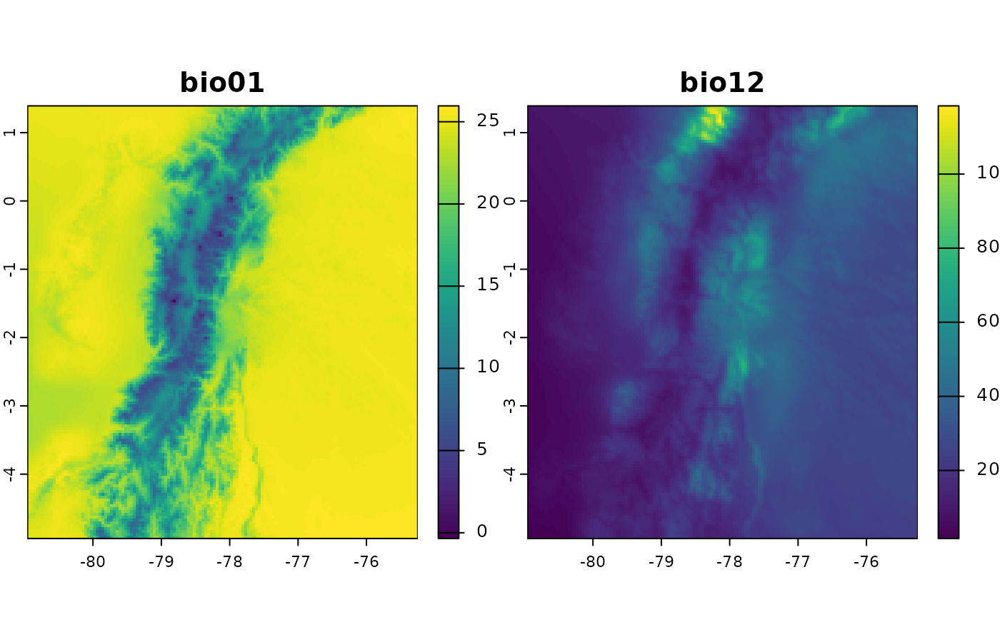

Tutorial
Gonzalo E. Pinilla-Buitrago
2025-06-17
Source:vignettes/tutorial-1-intro-en.Rmd
tutorial-1-intro-en.Rmd
fastbioclimPackage: Efficient Derivation of
Bioclimatic Variables
The fastbioclim package is designed to efficiently
generate bioclimatic variables using two distinct
workflows.
In-Memory (“terra”): The first method is based on
the terra package and is ideal when rasters can be
processed entirely in the computer’s RAM.
Out-of-Core (“tiled”): The second method is designed
for large rasters. It divides the area of interest into tiles (or grids)
that are processed independently using the exactextractr
and Rfast packages. This out-of-core approach allows for
the analysis of data of any size, regardless of the available RAM.
The main advantage of fastbioclim is that it can
intelligently select the most appropriate method with the argument
method = "auto", always ensuring the best balance between
speed and memory usage.
In addition to its performance, fastbioclim offers great
flexibility: - It allows for the calculation of a subset of variables
without needing to generate the complete set. - It expands the set to 35
bioclimatic variables, including solar radiation (bios 20-27) and
moisture summaries (bios 28-35) based on the ANUCLIM 6.1 nomenclature
(Xu & Hutchinson, 2012). - It offers the option to define custom
time periods (e.g., weeks, semesters) for period-based variables (like
bio08 or bio18). - It allows the use of a real average temperature
raster (parameter tavg), instead of the standard
approximation of (tmax + tmin) / 2. - It allows the analysis of any
temporal variable (wind speed, humidity, etc.) with the same powerful
and scalable architecture, using the derive_statistics()
function. - It allows the use of static indices for advanced control,
ideal for time-series analysis (e.g., ensuring the “warmest period”
always refers to the same months each year).
The functionality of fastbioclim is inspired by the
biovars() function from the dismo package,
with the goal of streamlining and scaling the process of creating
bioclimatic variables for ecological and environmental modeling.
Disclaimer: This Package is Under Development
This R package is currently under development and may contain errors, bugs, or incomplete features.
Contributions and bug reports are welcome. If you encounter issues or have suggestions for improvement, please open an issue on the GitHub repository.
Installation
To install fastbioclim, you can use the
remotes package. If you do not have it installed, you can
do so by running:
install.packages("remotes")
remotes::install_github("gepinillab/fastbioclim")##
## ── R CMD build ─────────────────────────────────────────────────────────────────
## * checking for file ‘/tmp/Rtmp1UYv31/remotes25561013f3f5/gepinillab-fastbioclim-d9e9347/DESCRIPTION’ ... OK
## * preparing ‘fastbioclim’:
## * checking DESCRIPTION meta-information ... OK
## * checking for LF line-endings in source and make files and shell scripts
## * checking for empty or unneeded directories
## Omitted ‘LazyData’ from DESCRIPTION
## NB: this package now depends on R (>= 4.1.0)
## WARNING: Added dependency on R >= 4.1.0 because package code uses the
## pipe |> or function shorthand \(...) syntax added in R 4.1.0.
## File(s) using such syntax:
## ‘bioclim_terra.R’ ‘stats_fast.R’ ‘stats_terra.R’ ‘write_layers.R’
## * building ‘fastbioclim_0.2.0.tar.gz’
remotes::install_github("gepinillab/egdata.fastbioclim")Install and load the necessary packages:
# Load libraries and install them if necessary
if (!require("terra")) {
install.packages("terra")
}
if (!require("future.apply")) {
install.packages("future.apply")
}
if (!require("progressr")) {
install.packages("progressr")
}
if (!require("fastbioclim")) {
remotes::install_github("gepinillab/fastbioclim")
}
if (!require("egdata.fastbioclim")) {
remotes::install_github("gepinillab/egdata.fastbioclim")
}Getting the 19 Bioclimatic Variables for Ecuador
Similar to biovars(), this package requires the user to
provide the average climatic variables per time unit for the
calculation. Traditionally, these time units correspond to monthly
averages of temperature and precipitation over decades. For this
example, we will use variables obtained and processed from CHELSA v2.1
(Karger et al., 2017) for Ecuador, which are available within the data
package (egdata.fastbioclim on GitHub only).
# Get a list of rasters and create a SpatRaster for each variable
# Minimum temperature
tmin_ecu <- system.file("extdata/ecuador/", package = "egdata.fastbioclim") |>
list.files("tmin", full.names = TRUE) |> rast()
# Maximum temperature
tmax_ecu <- system.file("extdata/ecuador/", package = "egdata.fastbioclim") |>
list.files("tmax", full.names = TRUE) |> rast()
# Precipitation
prcp_ecu <- system.file("extdata/ecuador/", package = "egdata.fastbioclim") |>
list.files("prcp", full.names = TRUE) |> rast()
# Define the directory where the rasters will be saved
output_dir_bioclim <- file.path(tempdir(), "bioclim_ecuador")
# Get the 19 variables for Ecuador
bioclim_ecu <- derive_bioclim(
bios = 1:19,
tmin = tmin_ecu,
tmax = tmax_ecu,
prcp = prcp_ecu,
output_dir = output_dir_bioclim,
overwrite = TRUE
)
# Plot bio01 and bio12
plot(bioclim_ecu[[c("bio01", "bio12")]])
Using Average Temperature as Input
The fastbioclim package also offers the option to use
average temperature (defined with the tavg parameter) for
calculating bioclimatic variables.
# Average temperature
tavg_ecu <- system.file("extdata/ecuador/", package = "egdata.fastbioclim") |>
list.files("tavg", full.names = TRUE) |> rast()
# Define the directory where the rasters will be saved
output_dir_bioclim_v2 <- file.path(tempdir(), "bioclim_ecuador_v2")
bioclim_ecu_v2 <- derive_bioclim(
bios = 1:19,
tavg = tavg_ecu,
tmin = tmin_ecu,
tmax = tmax_ecu,
prcp = prcp_ecu,
output_dir = output_dir_bioclim_v2,
overwrite = TRUE
)
# Difference between bio01s when tavg is used
plot(bioclim_ecu_v2[["bio01"]] - bioclim_ecu[["bio01"]])
Selecting a Subset of Variables
Often, it is not necessary to use all bioclimatic variables in our
analyses. For this reason, and unlike biovars(), you can
define in the bios parameter the number that identifies
each of the bioclimatic variables. This way, it is not necessary to
obtain all 19 variables to then select only the variables of interest.
In the following example, only four variables will be obtained (bio05,
bio06, bio13, and bio14). This example is somewhat faster, as it is not
necessary to internally calculate the warmest/coldest or driest/wettest
quarters.
bios4_ecu <- derive_bioclim(
tmin = tmin_ecu,
tmax = tmax_ecu,
prcp = prcp_ecu,
bios = c(5, 6, 13, 14),
overwrite = TRUE
)
plot(bios4_ecu)Building Summaries with Other Variables
Another important functionality of fastbioclim is the
option to obtain statistics similar to bioclimatic variables but with
other variables. As an example, we will create summaries of average
monthly wind variables. For the quarterly interactive variables, we will
use the wettest and driest quarters.
wind_ecu <- system.file("extdata/ecuador/", package = "egdata.fastbioclim") |>
list.files("wind", full.names = TRUE) |> rast()
wind_dir_ecu <- file.path(tempdir(), "wind_ecuador")
ecu_stats <- derive_statistics(
variable = wind_ecu,
stats = c("mean", "max", "min", "stdev", "max_period", "min_period"),
inter_variable = prcp_ecu,
inter_stats = c("max_inter", "min_inter"),
prefix_variable = "wind",
suffix_inter_max = "wettest",
suffix_inter_min = "driest",
overwrite = TRUE,
output_dir = wind_dir_ecu
)
plot(ecu_stats)Subsets of variables can also be constructed. In this case, we will create wind variables, but only based on the interaction with temperature, which correspond to “Wind in the warmest quarter” and “Wind in the coldest quarter”.
ecu_stats_v2 <- derive_statistics(
variable = wind_ecu,
stats = NULL,
inter_variable = tavg_ecu,
inter_stats = c("max_inter", "min_inter"),
prefix_variable = "wind",
suffix_inter_max = "warmest",
suffix_inter_min = "coldest",
overwrite = TRUE,
output_dir = wind_dir_ecu
)
plot(ecu_stats_v2)Building for the Neotropics: 35 Variables
Based on the ANUCLIM 6.1 nomenclature (Xu & Hutchinson, 2012),
derive_bioclim() also offers the option to create
bioclimatic variables based on moisture and solar radiation indices. In
this case, we will construct the 35 bioclimatic variables for an extent
covering the Neotropics.
For this case, the “auto” method should use the “tiled” method for
creating the variables. But you can also force it to use this method
with the parameter method="tiled". This method will divide
the area of interest into tiles using the decimal degrees defined in the
tile_degrees parameter (5 is the default value).
Parallelization: It is also important to mention
that the ‘tiled’ method can be parallelized using
future::plan(). For more information, consult the
documentation of that package.
Progress Bar: A progress bar is available using the
progressr package. To activate it, you need to use the
function progressr::handlers() or
progressr::with_progress(). For more information, consult
the documentation of that package.
# Get a list of rasters and create a SpatRaster for each variable
# Average temperature
tavg_neo <- system.file("extdata/neotropics/", package = "egdata.fastbioclim") |>
list.files("tavg", full.names = TRUE) |> rast()
# Minimum temperature
tmin_neo <- system.file("extdata/neotropics/", package = "egdata.fastbioclim") |>
list.files("tmin", full.names = TRUE) |> rast()
# Maximum temperature
tmax_neo <- system.file("extdata/neotropics/", package = "egdata.fastbioclim") |>
list.files("tmax", full.names = TRUE) |> rast()
# Precipitation
prcp_neo <- system.file("extdata/neotropics/", package = "egdata.fastbioclim") |>
list.files("prcp", full.names = TRUE) |> rast()
# Solar radiation
srad_neo <- system.file("extdata/neotropics/", package = "egdata.fastbioclim") |>
list.files("srad", full.names = TRUE) |> rast()
# Climatic moisture index
mois_neo <- system.file("extdata/neotropics/", package = "egdata.fastbioclim") |>
list.files("cmi", full.names = TRUE) |> rast()
# Define the directory where the rasters will be saved
output_dir_neo <- file.path(tempdir(), "bioclim_neotropics")
# Activate progress bar
# progressr::handlers(global = TRUE)
# Define parallelization plan
# future::plan("multisession", workers = 4)
# Get the 35 variables for the Neotropics
bioclim_neo <- derive_bioclim(
bios = 1:35,
tavg = tavg_neo,
tmin = tmin_neo,
tmax = tmax_neo,
prcp = prcp_neo,
srad = srad_neo,
mois = mois_neo,
method = "tiled",
tile_degrees = 20,
output_dir = output_dir_neo,
overwrite = TRUE
)## | | | 0% | | | 1% | |= | 2% | |== | 3% | |== | 4% | |== | 5% | |=== | 5% | |=== | 6% | |=== | 7% | |==== | 8% | |===== | 9% | |===== | 10% | |===== | 11% | |====== | 11% | |====== | 12% | |====== | 13% | |======= | 14% | |======== | 15% | |======== | 16% | |======== | 17% | |========= | 17% | |========= | 18% | |========= | 19% | |========== | 20% | |=========== | 21% | |=========== | 22% | |=========== | 23% | |============ | 23% | |============ | 24% | |============ | 25% | |============= | 26% | |============== | 27% | |============== | 28% | |============== | 29% | |=============== | 29% | |=============== | 30% | |=============== | 31% | |================ | 32% | |================= | 33% | |================= | 34% | |================= | 35% | |================== | 35% | |================== | 36% | |================== | 37% | |=================== | 38% | |==================== | 39% | |==================== | 40% | |==================== | 41% | |===================== | 41% | |===================== | 42% | |===================== | 43% | |====================== | 44% | |======================= | 45% | |======================= | 46% | |======================= | 47% | |======================== | 47% | |======================== | 48% | |======================== | 49% | |========================= | 50% | |========================== | 51% | |========================== | 52% | |========================== | 53% | |=========================== | 53% | |=========================== | 54% | |=========================== | 55% | |============================ | 56% | |============================= | 57% | |============================= | 58% | |============================= | 59% | |============================== | 59% | |============================== | 60% | |============================== | 61% | |=============================== | 62% | |================================ | 63% | |================================ | 64% | |================================ | 65% | |================================= | 65% | |================================= | 66% | |================================= | 67% | |================================== | 68% | |=================================== | 69% | |=================================== | 70% | |=================================== | 71% | |==================================== | 71% | |==================================== | 72% | |==================================== | 73% | |===================================== | 74% | |====================================== | 75% | |====================================== | 76% | |====================================== | 77% | |======================================= | 77% | |======================================= | 78% | |======================================= | 79% | |======================================== | 80% | |========================================= | 81% | |========================================= | 82% | |========================================= | 83% | |========================================== | 83% | |========================================== | 84% | |========================================== | 85% | |=========================================== | 86% | |============================================ | 87% | |============================================ | 88% | |============================================ | 89% | |============================================= | 89% | |============================================= | 90% | |============================================= | 91% | |============================================== | 92% | |=============================================== | 93% | |=============================================== | 94% | |=============================================== | 95% | |================================================ | 95% | |================================================ | 96% | |================================================ | 97% | |================================================= | 98% | |==================================================| 99% | |==================================================| 100%## | | | 0% | | | 1% | |= | 2% | |== | 3% | |== | 4% | |== | 5% | |=== | 5% | |=== | 6% | |=== | 7% | |==== | 8% | |===== | 9% | |===== | 10% | |===== | 11% | |====== | 11% | |====== | 12% | |====== | 13% | |======= | 14% | |======== | 15% | |======== | 16% | |======== | 17% | |========= | 17% | |========= | 18% | |========= | 19% | |========== | 20% | |=========== | 21% | |=========== | 22% | |=========== | 23% | |============ | 23% | |============ | 24% | |============ | 25% | |============= | 26% | |============== | 27% | |============== | 28% | |============== | 29% | |=============== | 29% | |=============== | 30% | |=============== | 31% | |================ | 32% | |================= | 33% | |================= | 34% | |================= | 35% | |================== | 35% | |================== | 36% | |================== | 37% | |=================== | 38% | |==================== | 39% | |==================== | 40% | |==================== | 41% | |===================== | 41% | |===================== | 42% | |===================== | 43% | |====================== | 44% | |======================= | 45% | |======================= | 46% | |======================= | 47% | |======================== | 47% | |======================== | 48% | |======================== | 49% | |========================= | 50% | |========================== | 51% | |========================== | 52% | |========================== | 53% | |=========================== | 53% | |=========================== | 54% | |=========================== | 55% | |============================ | 56% | |============================= | 57% | |============================= | 58% | |============================= | 59% | |============================== | 59% | |============================== | 60% | |============================== | 61% | |=============================== | 62% | |================================ | 63% | |================================ | 64% | |================================ | 65% | |================================= | 65% | |================================= | 66% | |================================= | 67% | |================================== | 68% | |=================================== | 69% | |=================================== | 70% | |=================================== | 71% | |==================================== | 71% | |==================================== | 72% | |==================================== | 73% | |===================================== | 74% | |====================================== | 75% | |====================================== | 76% | |====================================== | 77% | |======================================= | 77% | |======================================= | 78% | |======================================= | 79% | |======================================== | 80% | |========================================= | 81% | |========================================= | 82% | |========================================= | 83% | |========================================== | 83% | |========================================== | 84% | |========================================== | 85% | |=========================================== | 86% | |============================================ | 87% | |============================================ | 88% | |============================================ | 89% | |============================================= | 89% | |============================================= | 90% | |============================================= | 91% | |============================================== | 92% | |=============================================== | 93% | |=============================================== | 94% | |=============================================== | 95% | |================================================ | 95% | |================================================ | 96% | |================================================ | 97% | |================================================= | 98% | |==================================================| 99% | |==================================================| 100%## | | | 0% | | | 1% | |= | 2% | |== | 3% | |== | 4% | |== | 5% | |=== | 5% | |=== | 6% | |=== | 7% | |==== | 8% | |===== | 9% | |===== | 10% | |===== | 11% | |====== | 11% | |====== | 12% | |====== | 13% | |======= | 14% | |======== | 15% | |======== | 16% | |======== | 17% | |========= | 17% | |========= | 18% | |========= | 19% | |========== | 20% | |=========== | 21% | |=========== | 22% | |=========== | 23% | |============ | 23% | |============ | 24% | |============ | 25% | |============= | 26% | |============== | 27% | |============== | 28% | |============== | 29% | |=============== | 29% | |=============== | 30% | |=============== | 31% | |================ | 32% | |================= | 33% | |================= | 34% | |================= | 35% | |================== | 35% | |================== | 36% | |================== | 37% | |=================== | 38% | |==================== | 39% | |==================== | 40% | |==================== | 41% | |===================== | 41% | |===================== | 42% | |===================== | 43% | |====================== | 44% | |======================= | 45% | |======================= | 46% | |======================= | 47% | |======================== | 47% | |======================== | 48% | |======================== | 49% | |========================= | 50% | |========================== | 51% | |========================== | 52% | |========================== | 53% | |=========================== | 53% | |=========================== | 54% | |=========================== | 55% | |============================ | 56% | |============================= | 57% | |============================= | 58% | |============================= | 59% | |============================== | 59% | |============================== | 60% | |============================== | 61% | |=============================== | 62% | |================================ | 63% | |================================ | 64% | |================================ | 65% | |================================= | 65% | |================================= | 66% | |================================= | 67% | |================================== | 68% | |=================================== | 69% | |=================================== | 70% | |=================================== | 71% | |==================================== | 71% | |==================================== | 72% | |==================================== | 73% | |===================================== | 74% | |====================================== | 75% | |====================================== | 76% | |====================================== | 77% | |======================================= | 77% | |======================================= | 78% | |======================================= | 79% | |======================================== | 80% | |========================================= | 81% | |========================================= | 82% | |========================================= | 83% | |========================================== | 83% | |========================================== | 84% | |========================================== | 85% | |=========================================== | 86% | |============================================ | 87% | |============================================ | 88% | |============================================ | 89% | |============================================= | 89% | |============================================= | 90% | |============================================= | 91% | |============================================== | 92% | |=============================================== | 93% | |=============================================== | 94% | |=============================================== | 95% | |================================================ | 95% | |================================================ | 96% | |================================================ | 97% | |================================================= | 98% | |==================================================| 99% | |==================================================| 100%## | | | 0% | | | 1% | |= | 2% | |== | 3% | |== | 4% | |== | 5% | |=== | 5% | |=== | 6% | |=== | 7% | |==== | 8% | |===== | 9% | |===== | 10% | |===== | 11% | |====== | 11% | |====== | 12% | |====== | 13% | |======= | 14% | |======== | 15% | |======== | 16% | |======== | 17% | |========= | 17% | |========= | 18% | |========= | 19% | |========== | 20% | |=========== | 21% | |=========== | 22% | |=========== | 23% | |============ | 23% | |============ | 24% | |============ | 25% | |============= | 26% | |============== | 27% | |============== | 28% | |============== | 29% | |=============== | 29% | |=============== | 30% | |=============== | 31% | |================ | 32% | |================= | 33% | |================= | 34% | |================= | 35% | |================== | 35% | |================== | 36% | |================== | 37% | |=================== | 38% | |==================== | 39% | |==================== | 40% | |==================== | 41% | |===================== | 41% | |===================== | 42% | |===================== | 43% | |====================== | 44% | |======================= | 45% | |======================= | 46% | |======================= | 47% | |======================== | 47% | |======================== | 48% | |======================== | 49% | |========================= | 50% | |========================== | 51% | |========================== | 52% | |========================== | 53% | |=========================== | 53% | |=========================== | 54% | |=========================== | 55% | |============================ | 56% | |============================= | 57% | |============================= | 58% | |============================= | 59% | |============================== | 59% | |============================== | 60% | |============================== | 61% | |=============================== | 62% | |================================ | 63% | |================================ | 64% | |================================ | 65% | |================================= | 65% | |================================= | 66% | |================================= | 67% | |================================== | 68% | |=================================== | 69% | |=================================== | 70% | |=================================== | 71% | |==================================== | 71% | |==================================== | 72% | |==================================== | 73% | |===================================== | 74% | |====================================== | 75% | |====================================== | 76% | |====================================== | 77% | |======================================= | 77% | |======================================= | 78% | |======================================= | 79% | |======================================== | 80% | |========================================= | 81% | |========================================= | 82% | |========================================= | 83% | |========================================== | 83% | |========================================== | 84% | |========================================== | 85% | |=========================================== | 86% | |============================================ | 87% | |============================================ | 88% | |============================================ | 89% | |============================================= | 89% | |============================================= | 90% | |============================================= | 91% | |============================================== | 92% | |=============================================== | 93% | |=============================================== | 94% | |=============================================== | 95% | |================================================ | 95% | |================================================ | 96% | |================================================ | 97% | |================================================= | 98% | |==================================================| 99% | |==================================================| 100%## | | | 0% | | | 1% | |= | 2% | |== | 3% | |== | 4% | |== | 5% | |=== | 5% | |=== | 6% | |=== | 7% | |==== | 8% | |===== | 9% | |===== | 10% | |===== | 11% | |====== | 11% | |====== | 12% | |====== | 13% | |======= | 14% | |======== | 15% | |======== | 16% | |======== | 17% | |========= | 17% | |========= | 18% | |========= | 19% | |========== | 20% | |=========== | 21% | |=========== | 22% | |=========== | 23% | |============ | 23% | |============ | 24% | |============ | 25% | |============= | 26% | |============== | 27% | |============== | 28% | |============== | 29% | |=============== | 29% | |=============== | 30% | |=============== | 31% | |================ | 32% | |================= | 33% | |================= | 34% | |================= | 35% | |================== | 35% | |================== | 36% | |================== | 37% | |=================== | 38% | |==================== | 39% | |==================== | 40% | |==================== | 41% | |===================== | 41% | |===================== | 42% | |===================== | 43% | |====================== | 44% | |======================= | 45% | |======================= | 46% | |======================= | 47% | |======================== | 47% | |======================== | 48% | |======================== | 49% | |========================= | 50% | |========================== | 51% | |========================== | 52% | |========================== | 53% | |=========================== | 53% | |=========================== | 54% | |=========================== | 55% | |============================ | 56% | |============================= | 57% | |============================= | 58% | |============================= | 59% | |============================== | 59% | |============================== | 60% | |============================== | 61% | |=============================== | 62% | |================================ | 63% | |================================ | 64% | |================================ | 65% | |================================= | 65% | |================================= | 66% | |================================= | 67% | |================================== | 68% | |=================================== | 69% | |=================================== | 70% | |=================================== | 71% | |==================================== | 71% | |==================================== | 72% | |==================================== | 73% | |===================================== | 74% | |====================================== | 75% | |====================================== | 76% | |====================================== | 77% | |======================================= | 77% | |======================================= | 78% | |======================================= | 79% | |======================================== | 80% | |========================================= | 81% | |========================================= | 82% | |========================================= | 83% | |========================================== | 83% | |========================================== | 84% | |========================================== | 85% | |=========================================== | 86% | |============================================ | 87% | |============================================ | 88% | |============================================ | 89% | |============================================= | 89% | |============================================= | 90% | |============================================= | 91% | |============================================== | 92% | |=============================================== | 93% | |=============================================== | 94% | |=============================================== | 95% | |================================================ | 95% | |================================================ | 96% | |================================================ | 97% | |================================================= | 98% | |==================================================| 99% | |==================================================| 100%## | | | 0% | | | 1% | |= | 2% | |== | 3% | |== | 4% | |== | 5% | |=== | 5% | |=== | 6% | |=== | 7% | |==== | 8% | |===== | 9% | |===== | 10% | |===== | 11% | |====== | 11% | |====== | 12% | |====== | 13% | |======= | 14% | |======== | 15% | |======== | 16% | |======== | 17% | |========= | 17% | |========= | 18% | |========= | 19% | |========== | 20% | |=========== | 21% | |=========== | 22% | |=========== | 23% | |============ | 23% | |============ | 24% | |============ | 25% | |============= | 26% | |============== | 27% | |============== | 28% | |============== | 29% | |=============== | 29% | |=============== | 30% | |=============== | 31% | |================ | 32% | |================= | 33% | |================= | 34% | |================= | 35% | |================== | 35% | |================== | 36% | |================== | 37% | |=================== | 38% | |==================== | 39% | |==================== | 40% | |==================== | 41% | |===================== | 41% | |===================== | 42% | |===================== | 43% | |====================== | 44% | |======================= | 45% | |======================= | 46% | |======================= | 47% | |======================== | 47% | |======================== | 48% | |======================== | 49% | |========================= | 50% | |========================== | 51% | |========================== | 52% | |========================== | 53% | |=========================== | 53% | |=========================== | 54% | |=========================== | 55% | |============================ | 56% | |============================= | 57% | |============================= | 58% | |============================= | 59% | |============================== | 59% | |============================== | 60% | |============================== | 61% | |=============================== | 62% | |================================ | 63% | |================================ | 64% | |================================ | 65% | |================================= | 65% | |================================= | 66% | |================================= | 67% | |================================== | 68% | |=================================== | 69% | |=================================== | 70% | |=================================== | 71% | |==================================== | 71% | |==================================== | 72% | |==================================== | 73% | |===================================== | 74% | |====================================== | 75% | |====================================== | 76% | |====================================== | 77% | |======================================= | 77% | |======================================= | 78% | |======================================= | 79% | |======================================== | 80% | |========================================= | 81% | |========================================= | 82% | |========================================= | 83% | |========================================== | 83% | |========================================== | 84% | |========================================== | 85% | |=========================================== | 86% | |============================================ | 87% | |============================================ | 88% | |============================================ | 89% | |============================================= | 89% | |============================================= | 90% | |============================================= | 91% | |============================================== | 92% | |=============================================== | 93% | |=============================================== | 94% | |=============================================== | 95% | |================================================ | 95% | |================================================ | 96% | |================================================ | 97% | |================================================= | 98% | |==================================================| 99% | |==================================================| 100%## | | | 0% | | | 1% | |= | 2% | |== | 3% | |== | 4% | |== | 5% | |=== | 5% | |=== | 6% | |=== | 7% | |==== | 8% | |===== | 9% | |===== | 10% | |===== | 11% | |====== | 11% | |====== | 12% | |====== | 13% | |======= | 14% | |======== | 15% | |======== | 16% | |======== | 17% | |========= | 17% | |========= | 18% | |========= | 19% | |========== | 20% | |=========== | 21% | |=========== | 22% | |=========== | 23% | |============ | 23% | |============ | 24% | |============ | 25% | |============= | 26% | |============== | 27% | |============== | 28% | |============== | 29% | |=============== | 29% | |=============== | 30% | |=============== | 31% | |================ | 32% | |================= | 33% | |================= | 34% | |================= | 35% | |================== | 35% | |================== | 36% | |================== | 37% | |=================== | 38% | |==================== | 39% | |==================== | 40% | |==================== | 41% | |===================== | 41% | |===================== | 42% | |===================== | 43% | |====================== | 44% | |======================= | 45% | |======================= | 46% | |======================= | 47% | |======================== | 47% | |======================== | 48% | |======================== | 49% | |========================= | 50% | |========================== | 51% | |========================== | 52% | |========================== | 53% | |=========================== | 53% | |=========================== | 54% | |=========================== | 55% | |============================ | 56% | |============================= | 57% | |============================= | 58% | |============================= | 59% | |============================== | 59% | |============================== | 60% | |============================== | 61% | |=============================== | 62% | |================================ | 63% | |================================ | 64% | |================================ | 65% | |================================= | 65% | |================================= | 66% | |================================= | 67% | |================================== | 68% | |=================================== | 69% | |=================================== | 70% | |=================================== | 71% | |==================================== | 71% | |==================================== | 72% | |==================================== | 73% | |===================================== | 74% | |====================================== | 75% | |====================================== | 76% | |====================================== | 77% | |======================================= | 77% | |======================================= | 78% | |======================================= | 79% | |======================================== | 80% | |========================================= | 81% | |========================================= | 82% | |========================================= | 83% | |========================================== | 83% | |========================================== | 84% | |========================================== | 85% | |=========================================== | 86% | |============================================ | 87% | |============================================ | 88% | |============================================ | 89% | |============================================= | 89% | |============================================= | 90% | |============================================= | 91% | |============================================== | 92% | |=============================================== | 93% | |=============================================== | 94% | |=============================================== | 95% | |================================================ | 95% | |================================================ | 96% | |================================================ | 97% | |================================================= | 98% | |==================================================| 99% | |==================================================| 100%## | | | 0% | | | 1% | |= | 2% | |== | 3% | |== | 4% | |== | 5% | |=== | 5% | |=== | 6% | |=== | 7% | |==== | 8% | |===== | 9% | |===== | 10% | |===== | 11% | |====== | 11% | |====== | 12% | |====== | 13% | |======= | 14% | |======== | 15% | |======== | 16% | |======== | 17% | |========= | 17% | |========= | 18% | |========= | 19% | |========== | 20% | |=========== | 21% | |=========== | 22% | |=========== | 23% | |============ | 23% | |============ | 24% | |============ | 25% | |============= | 26% | |============== | 27% | |============== | 28% | |============== | 29% | |=============== | 29% | |=============== | 30% | |=============== | 31% | |================ | 32% | |================= | 33% | |================= | 34% | |================= | 35% | |================== | 35% | |================== | 36% | |================== | 37% | |=================== | 38% | |==================== | 39% | |==================== | 40% | |==================== | 41% | |===================== | 41% | |===================== | 42% | |===================== | 43% | |====================== | 44% | |======================= | 45% | |======================= | 46% | |======================= | 47% | |======================== | 47% | |======================== | 48% | |======================== | 49% | |========================= | 50% | |========================== | 51% | |========================== | 52% | |========================== | 53% | |=========================== | 53% | |=========================== | 54% | |=========================== | 55% | |============================ | 56% | |============================= | 57% | |============================= | 58% | |============================= | 59% | |============================== | 59% | |============================== | 60% | |============================== | 61% | |=============================== | 62% | |================================ | 63% | |================================ | 64% | |================================ | 65% | |================================= | 65% | |================================= | 66% | |================================= | 67% | |================================== | 68% | |=================================== | 69% | |=================================== | 70% | |=================================== | 71% | |==================================== | 71% | |==================================== | 72% | |==================================== | 73% | |===================================== | 74% | |====================================== | 75% | |====================================== | 76% | |====================================== | 77% | |======================================= | 77% | |======================================= | 78% | |======================================= | 79% | |======================================== | 80% | |========================================= | 81% | |========================================= | 82% | |========================================= | 83% | |========================================== | 83% | |========================================== | 84% | |========================================== | 85% | |=========================================== | 86% | |============================================ | 87% | |============================================ | 88% | |============================================ | 89% | |============================================= | 89% | |============================================= | 90% | |============================================= | 91% | |============================================== | 92% | |=============================================== | 93% | |=============================================== | 94% | |=============================================== | 95% | |================================================ | 95% | |================================================ | 96% | |================================================ | 97% | |================================================= | 98% | |==================================================| 99% | |==================================================| 100%## | | | 0% | | | 1% | |= | 2% | |== | 3% | |== | 4% | |== | 5% | |=== | 5% | |=== | 6% | |=== | 7% | |==== | 8% | |===== | 9% | |===== | 10% | |===== | 11% | |====== | 11% | |====== | 12% | |====== | 13% | |======= | 14% | |======== | 15% | |======== | 16% | |======== | 17% | |========= | 17% | |========= | 18% | |========= | 19% | |========== | 20% | |=========== | 21% | |=========== | 22% | |=========== | 23% | |============ | 23% | |============ | 24% | |============ | 25% | |============= | 26% | |============== | 27% | |============== | 28% | |============== | 29% | |=============== | 29% | |=============== | 30% | |=============== | 31% | |================ | 32% | |================= | 33% | |================= | 34% | |================= | 35% | |================== | 35% | |================== | 36% | |================== | 37% | |=================== | 38% | |==================== | 39% | |==================== | 40% | |==================== | 41% | |===================== | 41% | |===================== | 42% | |===================== | 43% | |====================== | 44% | |======================= | 45% | |======================= | 46% | |======================= | 47% | |======================== | 47% | |======================== | 48% | |======================== | 49% | |========================= | 50% | |========================== | 51% | |========================== | 52% | |========================== | 53% | |=========================== | 53% | |=========================== | 54% | |=========================== | 55% | |============================ | 56% | |============================= | 57% | |============================= | 58% | |============================= | 59% | |============================== | 59% | |============================== | 60% | |============================== | 61% | |=============================== | 62% | |================================ | 63% | |================================ | 64% | |================================ | 65% | |================================= | 65% | |================================= | 66% | |================================= | 67% | |================================== | 68% | |=================================== | 69% | |=================================== | 70% | |=================================== | 71% | |==================================== | 71% | |==================================== | 72% | |==================================== | 73% | |===================================== | 74% | |====================================== | 75% | |====================================== | 76% | |====================================== | 77% | |======================================= | 77% | |======================================= | 78% | |======================================= | 79% | |======================================== | 80% | |========================================= | 81% | |========================================= | 82% | |========================================= | 83% | |========================================== | 83% | |========================================== | 84% | |========================================== | 85% | |=========================================== | 86% | |============================================ | 87% | |============================================ | 88% | |============================================ | 89% | |============================================= | 89% | |============================================= | 90% | |============================================= | 91% | |============================================== | 92% | |=============================================== | 93% | |=============================================== | 94% | |=============================================== | 95% | |================================================ | 95% | |================================================ | 96% | |================================================ | 97% | |================================================= | 98% | |==================================================| 99% | |==================================================| 100%## | | | 0% | | | 1% | |= | 2% | |== | 3% | |== | 4% | |== | 5% | |=== | 5% | |=== | 6% | |=== | 7% | |==== | 8% | |===== | 9% | |===== | 10% | |===== | 11% | |====== | 11% | |====== | 12% | |====== | 13% | |======= | 14% | |======== | 15% | |======== | 16% | |======== | 17% | |========= | 17% | |========= | 18% | |========= | 19% | |========== | 20% | |=========== | 21% | |=========== | 22% | |=========== | 23% | |============ | 23% | |============ | 24% | |============ | 25% | |============= | 26% | |============== | 27% | |============== | 28% | |============== | 29% | |=============== | 29% | |=============== | 30% | |=============== | 31% | |================ | 32% | |================= | 33% | |================= | 34% | |================= | 35% | |================== | 35% | |================== | 36% | |================== | 37% | |=================== | 38% | |==================== | 39% | |==================== | 40% | |==================== | 41% | |===================== | 41% | |===================== | 42% | |===================== | 43% | |====================== | 44% | |======================= | 45% | |======================= | 46% | |======================= | 47% | |======================== | 47% | |======================== | 48% | |======================== | 49% | |========================= | 50% | |========================== | 51% | |========================== | 52% | |========================== | 53% | |=========================== | 53% | |=========================== | 54% | |=========================== | 55% | |============================ | 56% | |============================= | 57% | |============================= | 58% | |============================= | 59% | |============================== | 59% | |============================== | 60% | |============================== | 61% | |=============================== | 62% | |================================ | 63% | |================================ | 64% | |================================ | 65% | |================================= | 65% | |================================= | 66% | |================================= | 67% | |================================== | 68% | |=================================== | 69% | |=================================== | 70% | |=================================== | 71% | |==================================== | 71% | |==================================== | 72% | |==================================== | 73% | |===================================== | 74% | |====================================== | 75% | |====================================== | 76% | |====================================== | 77% | |======================================= | 77% | |======================================= | 78% | |======================================= | 79% | |======================================== | 80% | |========================================= | 81% | |========================================= | 82% | |========================================= | 83% | |========================================== | 83% | |========================================== | 84% | |========================================== | 85% | |=========================================== | 86% | |============================================ | 87% | |============================================ | 88% | |============================================ | 89% | |============================================= | 89% | |============================================= | 90% | |============================================= | 91% | |============================================== | 92% | |=============================================== | 93% | |=============================================== | 94% | |=============================================== | 95% | |================================================ | 95% | |================================================ | 96% | |================================================ | 97% | |================================================= | 98% | |==================================================| 99% | |==================================================| 100%## | | | 0% | | | 1% | |= | 2% | |== | 3% | |== | 4% | |== | 5% | |=== | 5% | |=== | 6% | |=== | 7% | |==== | 8% | |===== | 9% | |===== | 10% | |===== | 11% | |====== | 11% | |====== | 12% | |====== | 13% | |======= | 14% | |======== | 15% | |======== | 16% | |======== | 17% | |========= | 17% | |========= | 18% | |========= | 19% | |========== | 20% | |=========== | 21% | |=========== | 22% | |=========== | 23% | |============ | 23% | |============ | 24% | |============ | 25% | |============= | 26% | |============== | 27% | |============== | 28% | |============== | 29% | |=============== | 29% | |=============== | 30% | |=============== | 31% | |================ | 32% | |================= | 33% | |================= | 34% | |================= | 35% | |================== | 35% | |================== | 36% | |================== | 37% | |=================== | 38% | |==================== | 39% | |==================== | 40% | |==================== | 41% | |===================== | 41% | |===================== | 42% | |===================== | 43% | |====================== | 44% | |======================= | 45% | |======================= | 46% | |======================= | 47% | |======================== | 47% | |======================== | 48% | |======================== | 49% | |========================= | 50% | |========================== | 51% | |========================== | 52% | |========================== | 53% | |=========================== | 53% | |=========================== | 54% | |=========================== | 55% | |============================ | 56% | |============================= | 57% | |============================= | 58% | |============================= | 59% | |============================== | 59% | |============================== | 60% | |============================== | 61% | |=============================== | 62% | |================================ | 63% | |================================ | 64% | |================================ | 65% | |================================= | 65% | |================================= | 66% | |================================= | 67% | |================================== | 68% | |=================================== | 69% | |=================================== | 70% | |=================================== | 71% | |==================================== | 71% | |==================================== | 72% | |==================================== | 73% | |===================================== | 74% | |====================================== | 75% | |====================================== | 76% | |====================================== | 77% | |======================================= | 77% | |======================================= | 78% | |======================================= | 79% | |======================================== | 80% | |========================================= | 81% | |========================================= | 82% | |========================================= | 83% | |========================================== | 83% | |========================================== | 84% | |========================================== | 85% | |=========================================== | 86% | |============================================ | 87% | |============================================ | 88% | |============================================ | 89% | |============================================= | 89% | |============================================= | 90% | |============================================= | 91% | |============================================== | 92% | |=============================================== | 93% | |=============================================== | 94% | |=============================================== | 95% | |================================================ | 95% | |================================================ | 96% | |================================================ | 97% | |================================================= | 98% | |==================================================| 99% | |==================================================| 100%## | | | 0% | | | 1% | |= | 2% | |== | 3% | |== | 4% | |== | 5% | |=== | 5% | |=== | 6% | |=== | 7% | |==== | 8% | |===== | 9% | |===== | 10% | |===== | 11% | |====== | 11% | |====== | 12% | |====== | 13% | |======= | 14% | |======== | 15% | |======== | 16% | |======== | 17% | |========= | 17% | |========= | 18% | |========= | 19% | |========== | 20% | |=========== | 21% | |=========== | 22% | |=========== | 23% | |============ | 23% | |============ | 24% | |============ | 25% | |============= | 26% | |============== | 27% | |============== | 28% | |============== | 29% | |=============== | 29% | |=============== | 30% | |=============== | 31% | |================ | 32% | |================= | 33% | |================= | 34% | |================= | 35% | |================== | 35% | |================== | 36% | |================== | 37% | |=================== | 38% | |==================== | 39% | |==================== | 40% | |==================== | 41% | |===================== | 41% | |===================== | 42% | |===================== | 43% | |====================== | 44% | |======================= | 45% | |======================= | 46% | |======================= | 47% | |======================== | 47% | |======================== | 48% | |======================== | 49% | |========================= | 50% | |========================== | 51% | |========================== | 52% | |========================== | 53% | |=========================== | 53% | |=========================== | 54% | |=========================== | 55% | |============================ | 56% | |============================= | 57% | |============================= | 58% | |============================= | 59% | |============================== | 59% | |============================== | 60% | |============================== | 61% | |=============================== | 62% | |================================ | 63% | |================================ | 64% | |================================ | 65% | |================================= | 65% | |================================= | 66% | |================================= | 67% | |================================== | 68% | |=================================== | 69% | |=================================== | 70% | |=================================== | 71% | |==================================== | 71% | |==================================== | 72% | |==================================== | 73% | |===================================== | 74% | |====================================== | 75% | |====================================== | 76% | |====================================== | 77% | |======================================= | 77% | |======================================= | 78% | |======================================= | 79% | |======================================== | 80% | |========================================= | 81% | |========================================= | 82% | |========================================= | 83% | |========================================== | 83% | |========================================== | 84% | |========================================== | 85% | |=========================================== | 86% | |============================================ | 87% | |============================================ | 88% | |============================================ | 89% | |============================================= | 89% | |============================================= | 90% | |============================================= | 91% | |============================================== | 92% | |=============================================== | 93% | |=============================================== | 94% | |=============================================== | 95% | |================================================ | 95% | |================================================ | 96% | |================================================ | 97% | |================================================= | 98% | |==================================================| 99% | |==================================================| 100%## | | | 0% | | | 1% | |= | 2% | |== | 3% | |== | 4% | |== | 5% | |=== | 5% | |=== | 6% | |=== | 7% | |==== | 8% | |===== | 9% | |===== | 10% | |===== | 11% | |====== | 11% | |====== | 12% | |====== | 13% | |======= | 14% | |======== | 15% | |======== | 16% | |======== | 17% | |========= | 17% | |========= | 18% | |========= | 19% | |========== | 20% | |=========== | 21% | |=========== | 22% | |=========== | 23% | |============ | 23% | |============ | 24% | |============ | 25% | |============= | 26% | |============== | 27% | |============== | 28% | |============== | 29% | |=============== | 29% | |=============== | 30% | |=============== | 31% | |================ | 32% | |================= | 33% | |================= | 34% | |================= | 35% | |================== | 35% | |================== | 36% | |================== | 37% | |=================== | 38% | |==================== | 39% | |==================== | 40% | |==================== | 41% | |===================== | 41% | |===================== | 42% | |===================== | 43% | |====================== | 44% | |======================= | 45% | |======================= | 46% | |======================= | 47% | |======================== | 47% | |======================== | 48% | |======================== | 49% | |========================= | 50% | |========================== | 51% | |========================== | 52% | |========================== | 53% | |=========================== | 53% | |=========================== | 54% | |=========================== | 55% | |============================ | 56% | |============================= | 57% | |============================= | 58% | |============================= | 59% | |============================== | 59% | |============================== | 60% | |============================== | 61% | |=============================== | 62% | |================================ | 63% | |================================ | 64% | |================================ | 65% | |================================= | 65% | |================================= | 66% | |================================= | 67% | |================================== | 68% | |=================================== | 69% | |=================================== | 70% | |=================================== | 71% | |==================================== | 71% | |==================================== | 72% | |==================================== | 73% | |===================================== | 74% | |====================================== | 75% | |====================================== | 76% | |====================================== | 77% | |======================================= | 77% | |======================================= | 78% | |======================================= | 79% | |======================================== | 80% | |========================================= | 81% | |========================================= | 82% | |========================================= | 83% | |========================================== | 83% | |========================================== | 84% | |========================================== | 85% | |=========================================== | 86% | |============================================ | 87% | |============================================ | 88% | |============================================ | 89% | |============================================= | 89% | |============================================= | 90% | |============================================= | 91% | |============================================== | 92% | |=============================================== | 93% | |=============================================== | 94% | |=============================================== | 95% | |================================================ | 95% | |================================================ | 96% | |================================================ | 97% | |================================================= | 98% | |==================================================| 99% | |==================================================| 100%## | | | 0% | | | 1% | |= | 2% | |== | 3% | |== | 4% | |== | 5% | |=== | 5% | |=== | 6% | |=== | 7% | |==== | 8% | |===== | 9% | |===== | 10% | |===== | 11% | |====== | 11% | |====== | 12% | |====== | 13% | |======= | 14% | |======== | 15% | |======== | 16% | |======== | 17% | |========= | 17% | |========= | 18% | |========= | 19% | |========== | 20% | |=========== | 21% | |=========== | 22% | |=========== | 23% | |============ | 23% | |============ | 24% | |============ | 25% | |============= | 26% | |============== | 27% | |============== | 28% | |============== | 29% | |=============== | 29% | |=============== | 30% | |=============== | 31% | |================ | 32% | |================= | 33% | |================= | 34% | |================= | 35% | |================== | 35% | |================== | 36% | |================== | 37% | |=================== | 38% | |==================== | 39% | |==================== | 40% | |==================== | 41% | |===================== | 41% | |===================== | 42% | |===================== | 43% | |====================== | 44% | |======================= | 45% | |======================= | 46% | |======================= | 47% | |======================== | 47% | |======================== | 48% | |======================== | 49% | |========================= | 50% | |========================== | 51% | |========================== | 52% | |========================== | 53% | |=========================== | 53% | |=========================== | 54% | |=========================== | 55% | |============================ | 56% | |============================= | 57% | |============================= | 58% | |============================= | 59% | |============================== | 59% | |============================== | 60% | |============================== | 61% | |=============================== | 62% | |================================ | 63% | |================================ | 64% | |================================ | 65% | |================================= | 65% | |================================= | 66% | |================================= | 67% | |================================== | 68% | |=================================== | 69% | |=================================== | 70% | |=================================== | 71% | |==================================== | 71% | |==================================== | 72% | |==================================== | 73% | |===================================== | 74% | |====================================== | 75% | |====================================== | 76% | |====================================== | 77% | |======================================= | 77% | |======================================= | 78% | |======================================= | 79% | |======================================== | 80% | |========================================= | 81% | |========================================= | 82% | |========================================= | 83% | |========================================== | 83% | |========================================== | 84% | |========================================== | 85% | |=========================================== | 86% | |============================================ | 87% | |============================================ | 88% | |============================================ | 89% | |============================================= | 89% | |============================================= | 90% | |============================================= | 91% | |============================================== | 92% | |=============================================== | 93% | |=============================================== | 94% | |=============================================== | 95% | |================================================ | 95% | |================================================ | 96% | |================================================ | 97% | |================================================= | 98% | |==================================================| 99% | |==================================================| 100%## | | | 0% | | | 1% | |= | 2% | |== | 3% | |== | 4% | |== | 5% | |=== | 5% | |=== | 6% | |=== | 7% | |==== | 8% | |===== | 9% | |===== | 10% | |===== | 11% | |====== | 11% | |====== | 12% | |====== | 13% | |======= | 14% | |======== | 15% | |======== | 16% | |======== | 17% | |========= | 17% | |========= | 18% | |========= | 19% | |========== | 20% | |=========== | 21% | |=========== | 22% | |=========== | 23% | |============ | 23% | |============ | 24% | |============ | 25% | |============= | 26% | |============== | 27% | |============== | 28% | |============== | 29% | |=============== | 29% | |=============== | 30% | |=============== | 31% | |================ | 32% | |================= | 33% | |================= | 34% | |================= | 35% | |================== | 35% | |================== | 36% | |================== | 37% | |=================== | 38% | |==================== | 39% | |==================== | 40% | |==================== | 41% | |===================== | 41% | |===================== | 42% | |===================== | 43% | |====================== | 44% | |======================= | 45% | |======================= | 46% | |======================= | 47% | |======================== | 47% | |======================== | 48% | |======================== | 49% | |========================= | 50% | |========================== | 51% | |========================== | 52% | |========================== | 53% | |=========================== | 53% | |=========================== | 54% | |=========================== | 55% | |============================ | 56% | |============================= | 57% | |============================= | 58% | |============================= | 59% | |============================== | 59% | |============================== | 60% | |============================== | 61% | |=============================== | 62% | |================================ | 63% | |================================ | 64% | |================================ | 65% | |================================= | 65% | |================================= | 66% | |================================= | 67% | |================================== | 68% | |=================================== | 69% | |=================================== | 70% | |=================================== | 71% | |==================================== | 71% | |==================================== | 72% | |==================================== | 73% | |===================================== | 74% | |====================================== | 75% | |====================================== | 76% | |====================================== | 77% | |======================================= | 77% | |======================================= | 78% | |======================================= | 79% | |======================================== | 80% | |========================================= | 81% | |========================================= | 82% | |========================================= | 83% | |========================================== | 83% | |========================================== | 84% | |========================================== | 85% | |=========================================== | 86% | |============================================ | 87% | |============================================ | 88% | |============================================ | 89% | |============================================= | 89% | |============================================= | 90% | |============================================= | 91% | |============================================== | 92% | |=============================================== | 93% | |=============================================== | 94% | |=============================================== | 95% | |================================================ | 95% | |================================================ | 96% | |================================================ | 97% | |================================================= | 98% | |==================================================| 99% | |==================================================| 100%## | | | 0% | | | 1% | |= | 2% | |== | 3% | |== | 4% | |== | 5% | |=== | 5% | |=== | 6% | |=== | 7% | |==== | 8% | |===== | 9% | |===== | 10% | |===== | 11% | |====== | 11% | |====== | 12% | |====== | 13% | |======= | 14% | |======== | 15% | |======== | 16% | |======== | 17% | |========= | 17% | |========= | 18% | |========= | 19% | |========== | 20% | |=========== | 21% | |=========== | 22% | |=========== | 23% | |============ | 23% | |============ | 24% | |============ | 25% | |============= | 26% | |============== | 27% | |============== | 28% | |============== | 29% | |=============== | 29% | |=============== | 30% | |=============== | 31% | |================ | 32% | |================= | 33% | |================= | 34% | |================= | 35% | |================== | 35% | |================== | 36% | |================== | 37% | |=================== | 38% | |==================== | 39% | |==================== | 40% | |==================== | 41% | |===================== | 41% | |===================== | 42% | |===================== | 43% | |====================== | 44% | |======================= | 45% | |======================= | 46% | |======================= | 47% | |======================== | 47% | |======================== | 48% | |======================== | 49% | |========================= | 50% | |========================== | 51% | |========================== | 52% | |========================== | 53% | |=========================== | 53% | |=========================== | 54% | |=========================== | 55% | |============================ | 56% | |============================= | 57% | |============================= | 58% | |============================= | 59% | |============================== | 59% | |============================== | 60% | |============================== | 61% | |=============================== | 62% | |================================ | 63% | |================================ | 64% | |================================ | 65% | |================================= | 65% | |================================= | 66% | |================================= | 67% | |================================== | 68% | |=================================== | 69% | |=================================== | 70% | |=================================== | 71% | |==================================== | 71% | |==================================== | 72% | |==================================== | 73% | |===================================== | 74% | |====================================== | 75% | |====================================== | 76% | |====================================== | 77% | |======================================= | 77% | |======================================= | 78% | |======================================= | 79% | |======================================== | 80% | |========================================= | 81% | |========================================= | 82% | |========================================= | 83% | |========================================== | 83% | |========================================== | 84% | |========================================== | 85% | |=========================================== | 86% | |============================================ | 87% | |============================================ | 88% | |============================================ | 89% | |============================================= | 89% | |============================================= | 90% | |============================================= | 91% | |============================================== | 92% | |=============================================== | 93% | |=============================================== | 94% | |=============================================== | 95% | |================================================ | 95% | |================================================ | 96% | |================================================ | 97% | |================================================= | 98% | |==================================================| 99% | |==================================================| 100%## | | | 0% | | | 1% | |= | 2% | |== | 3% | |== | 4% | |== | 5% | |=== | 5% | |=== | 6% | |=== | 7% | |==== | 8% | |===== | 9% | |===== | 10% | |===== | 11% | |====== | 11% | |====== | 12% | |====== | 13% | |======= | 14% | |======== | 15% | |======== | 16% | |======== | 17% | |========= | 17% | |========= | 18% | |========= | 19% | |========== | 20% | |=========== | 21% | |=========== | 22% | |=========== | 23% | |============ | 23% | |============ | 24% | |============ | 25% | |============= | 26% | |============== | 27% | |============== | 28% | |============== | 29% | |=============== | 29% | |=============== | 30% | |=============== | 31% | |================ | 32% | |================= | 33% | |================= | 34% | |================= | 35% | |================== | 35% | |================== | 36% | |================== | 37% | |=================== | 38% | |==================== | 39% | |==================== | 40% | |==================== | 41% | |===================== | 41% | |===================== | 42% | |===================== | 43% | |====================== | 44% | |======================= | 45% | |======================= | 46% | |======================= | 47% | |======================== | 47% | |======================== | 48% | |======================== | 49% | |========================= | 50% | |========================== | 51% | |========================== | 52% | |========================== | 53% | |=========================== | 53% | |=========================== | 54% | |=========================== | 55% | |============================ | 56% | |============================= | 57% | |============================= | 58% | |============================= | 59% | |============================== | 59% | |============================== | 60% | |============================== | 61% | |=============================== | 62% | |================================ | 63% | |================================ | 64% | |================================ | 65% | |================================= | 65% | |================================= | 66% | |================================= | 67% | |================================== | 68% | |=================================== | 69% | |=================================== | 70% | |=================================== | 71% | |==================================== | 71% | |==================================== | 72% | |==================================== | 73% | |===================================== | 74% | |====================================== | 75% | |====================================== | 76% | |====================================== | 77% | |======================================= | 77% | |======================================= | 78% | |======================================= | 79% | |======================================== | 80% | |========================================= | 81% | |========================================= | 82% | |========================================= | 83% | |========================================== | 83% | |========================================== | 84% | |========================================== | 85% | |=========================================== | 86% | |============================================ | 87% | |============================================ | 88% | |============================================ | 89% | |============================================= | 89% | |============================================= | 90% | |============================================= | 91% | |============================================== | 92% | |=============================================== | 93% | |=============================================== | 94% | |=============================================== | 95% | |================================================ | 95% | |================================================ | 96% | |================================================ | 97% | |================================================= | 98% | |==================================================| 99% | |==================================================| 100%## | | | 0% | | | 1% | |= | 2% | |== | 3% | |== | 4% | |== | 5% | |=== | 5% | |=== | 6% | |=== | 7% | |==== | 8% | |===== | 9% | |===== | 10% | |===== | 11% | |====== | 11% | |====== | 12% | |====== | 13% | |======= | 14% | |======== | 15% | |======== | 16% | |======== | 17% | |========= | 17% | |========= | 18% | |========= | 19% | |========== | 20% | |=========== | 21% | |=========== | 22% | |=========== | 23% | |============ | 23% | |============ | 24% | |============ | 25% | |============= | 26% | |============== | 27% | |============== | 28% | |============== | 29% | |=============== | 29% | |=============== | 30% | |=============== | 31% | |================ | 32% | |================= | 33% | |================= | 34% | |================= | 35% | |================== | 35% | |================== | 36% | |================== | 37% | |=================== | 38% | |==================== | 39% | |==================== | 40% | |==================== | 41% | |===================== | 41% | |===================== | 42% | |===================== | 43% | |====================== | 44% | |======================= | 45% | |======================= | 46% | |======================= | 47% | |======================== | 47% | |======================== | 48% | |======================== | 49% | |========================= | 50% | |========================== | 51% | |========================== | 52% | |========================== | 53% | |=========================== | 53% | |=========================== | 54% | |=========================== | 55% | |============================ | 56% | |============================= | 57% | |============================= | 58% | |============================= | 59% | |============================== | 59% | |============================== | 60% | |============================== | 61% | |=============================== | 62% | |================================ | 63% | |================================ | 64% | |================================ | 65% | |================================= | 65% | |================================= | 66% | |================================= | 67% | |================================== | 68% | |=================================== | 69% | |=================================== | 70% | |=================================== | 71% | |==================================== | 71% | |==================================== | 72% | |==================================== | 73% | |===================================== | 74% | |====================================== | 75% | |====================================== | 76% | |====================================== | 77% | |======================================= | 77% | |======================================= | 78% | |======================================= | 79% | |======================================== | 80% | |========================================= | 81% | |========================================= | 82% | |========================================= | 83% | |========================================== | 83% | |========================================== | 84% | |========================================== | 85% | |=========================================== | 86% | |============================================ | 87% | |============================================ | 88% | |============================================ | 89% | |============================================= | 89% | |============================================= | 90% | |============================================= | 91% | |============================================== | 92% | |=============================================== | 93% | |=============================================== | 94% | |=============================================== | 95% | |================================================ | 95% | |================================================ | 96% | |================================================ | 97% | |================================================= | 98% | |==================================================| 99% | |==================================================| 100%## | | | 0% | | | 1% | |= | 2% | |== | 3% | |== | 4% | |== | 5% | |=== | 5% | |=== | 6% | |=== | 7% | |==== | 8% | |===== | 9% | |===== | 10% | |===== | 11% | |====== | 11% | |====== | 12% | |====== | 13% | |======= | 14% | |======== | 15% | |======== | 16% | |======== | 17% | |========= | 17% | |========= | 18% | |========= | 19% | |========== | 20% | |=========== | 21% | |=========== | 22% | |=========== | 23% | |============ | 23% | |============ | 24% | |============ | 25% | |============= | 26% | |============== | 27% | |============== | 28% | |============== | 29% | |=============== | 29% | |=============== | 30% | |=============== | 31% | |================ | 32% | |================= | 33% | |================= | 34% | |================= | 35% | |================== | 35% | |================== | 36% | |================== | 37% | |=================== | 38% | |==================== | 39% | |==================== | 40% | |==================== | 41% | |===================== | 41% | |===================== | 42% | |===================== | 43% | |====================== | 44% | |======================= | 45% | |======================= | 46% | |======================= | 47% | |======================== | 47% | |======================== | 48% | |======================== | 49% | |========================= | 50% | |========================== | 51% | |========================== | 52% | |========================== | 53% | |=========================== | 53% | |=========================== | 54% | |=========================== | 55% | |============================ | 56% | |============================= | 57% | |============================= | 58% | |============================= | 59% | |============================== | 59% | |============================== | 60% | |============================== | 61% | |=============================== | 62% | |================================ | 63% | |================================ | 64% | |================================ | 65% | |================================= | 65% | |================================= | 66% | |================================= | 67% | |================================== | 68% | |=================================== | 69% | |=================================== | 70% | |=================================== | 71% | |==================================== | 71% | |==================================== | 72% | |==================================== | 73% | |===================================== | 74% | |====================================== | 75% | |====================================== | 76% | |====================================== | 77% | |======================================= | 77% | |======================================= | 78% | |======================================= | 79% | |======================================== | 80% | |========================================= | 81% | |========================================= | 82% | |========================================= | 83% | |========================================== | 83% | |========================================== | 84% | |========================================== | 85% | |=========================================== | 86% | |============================================ | 87% | |============================================ | 88% | |============================================ | 89% | |============================================= | 89% | |============================================= | 90% | |============================================= | 91% | |============================================== | 92% | |=============================================== | 93% | |=============================================== | 94% | |=============================================== | 95% | |================================================ | 95% | |================================================ | 96% | |================================================ | 97% | |================================================= | 98% | |==================================================| 99% | |==================================================| 100%## | | | 0% | | | 1% | |= | 2% | |== | 3% | |== | 4% | |== | 5% | |=== | 5% | |=== | 6% | |=== | 7% | |==== | 8% | |===== | 9% | |===== | 10% | |===== | 11% | |====== | 11% | |====== | 12% | |====== | 13% | |======= | 14% | |======== | 15% | |======== | 16% | |======== | 17% | |========= | 17% | |========= | 18% | |========= | 19% | |========== | 20% | |=========== | 21% | |=========== | 22% | |=========== | 23% | |============ | 23% | |============ | 24% | |============ | 25% | |============= | 26% | |============== | 27% | |============== | 28% | |============== | 29% | |=============== | 29% | |=============== | 30% | |=============== | 31% | |================ | 32% | |================= | 33% | |================= | 34% | |================= | 35% | |================== | 35% | |================== | 36% | |================== | 37% | |=================== | 38% | |==================== | 39% | |==================== | 40% | |==================== | 41% | |===================== | 41% | |===================== | 42% | |===================== | 43% | |====================== | 44% | |======================= | 45% | |======================= | 46% | |======================= | 47% | |======================== | 47% | |======================== | 48% | |======================== | 49% | |========================= | 50% | |========================== | 51% | |========================== | 52% | |========================== | 53% | |=========================== | 53% | |=========================== | 54% | |=========================== | 55% | |============================ | 56% | |============================= | 57% | |============================= | 58% | |============================= | 59% | |============================== | 59% | |============================== | 60% | |============================== | 61% | |=============================== | 62% | |================================ | 63% | |================================ | 64% | |================================ | 65% | |================================= | 65% | |================================= | 66% | |================================= | 67% | |================================== | 68% | |=================================== | 69% | |=================================== | 70% | |=================================== | 71% | |==================================== | 71% | |==================================== | 72% | |==================================== | 73% | |===================================== | 74% | |====================================== | 75% | |====================================== | 76% | |====================================== | 77% | |======================================= | 77% | |======================================= | 78% | |======================================= | 79% | |======================================== | 80% | |========================================= | 81% | |========================================= | 82% | |========================================= | 83% | |========================================== | 83% | |========================================== | 84% | |========================================== | 85% | |=========================================== | 86% | |============================================ | 87% | |============================================ | 88% | |============================================ | 89% | |============================================= | 89% | |============================================= | 90% | |============================================= | 91% | |============================================== | 92% | |=============================================== | 93% | |=============================================== | 94% | |=============================================== | 95% | |================================================ | 95% | |================================================ | 96% | |================================================ | 97% | |================================================= | 98% | |==================================================| 99% | |==================================================| 100%## | | | 0% | | | 1% | |= | 2% | |== | 3% | |== | 4% | |== | 5% | |=== | 5% | |=== | 6% | |=== | 7% | |==== | 8% | |===== | 9% | |===== | 10% | |===== | 11% | |====== | 11% | |====== | 12% | |====== | 13% | |======= | 14% | |======== | 15% | |======== | 16% | |======== | 17% | |========= | 17% | |========= | 18% | |========= | 19% | |========== | 20% | |=========== | 21% | |=========== | 22% | |=========== | 23% | |============ | 23% | |============ | 24% | |============ | 25% | |============= | 26% | |============== | 27% | |============== | 28% | |============== | 29% | |=============== | 29% | |=============== | 30% | |=============== | 31% | |================ | 32% | |================= | 33% | |================= | 34% | |================= | 35% | |================== | 35% | |================== | 36% | |================== | 37% | |=================== | 38% | |==================== | 39% | |==================== | 40% | |==================== | 41% | |===================== | 41% | |===================== | 42% | |===================== | 43% | |====================== | 44% | |======================= | 45% | |======================= | 46% | |======================= | 47% | |======================== | 47% | |======================== | 48% | |======================== | 49% | |========================= | 50% | |========================== | 51% | |========================== | 52% | |========================== | 53% | |=========================== | 53% | |=========================== | 54% | |=========================== | 55% | |============================ | 56% | |============================= | 57% | |============================= | 58% | |============================= | 59% | |============================== | 59% | |============================== | 60% | |============================== | 61% | |=============================== | 62% | |================================ | 63% | |================================ | 64% | |================================ | 65% | |================================= | 65% | |================================= | 66% | |================================= | 67% | |================================== | 68% | |=================================== | 69% | |=================================== | 70% | |=================================== | 71% | |==================================== | 71% | |==================================== | 72% | |==================================== | 73% | |===================================== | 74% | |====================================== | 75% | |====================================== | 76% | |====================================== | 77% | |======================================= | 77% | |======================================= | 78% | |======================================= | 79% | |======================================== | 80% | |========================================= | 81% | |========================================= | 82% | |========================================= | 83% | |========================================== | 83% | |========================================== | 84% | |========================================== | 85% | |=========================================== | 86% | |============================================ | 87% | |============================================ | 88% | |============================================ | 89% | |============================================= | 89% | |============================================= | 90% | |============================================= | 91% | |============================================== | 92% | |=============================================== | 93% | |=============================================== | 94% | |=============================================== | 95% | |================================================ | 95% | |================================================ | 96% | |================================================ | 97% | |================================================= | 98% | |==================================================| 99% | |==================================================| 100%## | | | 0% | | | 1% | |= | 2% | |== | 3% | |== | 4% | |== | 5% | |=== | 5% | |=== | 6% | |=== | 7% | |==== | 8% | |===== | 9% | |===== | 10% | |===== | 11% | |====== | 11% | |====== | 12% | |====== | 13% | |======= | 14% | |======== | 15% | |======== | 16% | |======== | 17% | |========= | 17% | |========= | 18% | |========= | 19% | |========== | 20% | |=========== | 21% | |=========== | 22% | |=========== | 23% | |============ | 23% | |============ | 24% | |============ | 25% | |============= | 26% | |============== | 27% | |============== | 28% | |============== | 29% | |=============== | 29% | |=============== | 30% | |=============== | 31% | |================ | 32% | |================= | 33% | |================= | 34% | |================= | 35% | |================== | 35% | |================== | 36% | |================== | 37% | |=================== | 38% | |==================== | 39% | |==================== | 40% | |==================== | 41% | |===================== | 41% | |===================== | 42% | |===================== | 43% | |====================== | 44% | |======================= | 45% | |======================= | 46% | |======================= | 47% | |======================== | 47% | |======================== | 48% | |======================== | 49% | |========================= | 50% | |========================== | 51% | |========================== | 52% | |========================== | 53% | |=========================== | 53% | |=========================== | 54% | |=========================== | 55% | |============================ | 56% | |============================= | 57% | |============================= | 58% | |============================= | 59% | |============================== | 59% | |============================== | 60% | |============================== | 61% | |=============================== | 62% | |================================ | 63% | |================================ | 64% | |================================ | 65% | |================================= | 65% | |================================= | 66% | |================================= | 67% | |================================== | 68% | |=================================== | 69% | |=================================== | 70% | |=================================== | 71% | |==================================== | 71% | |==================================== | 72% | |==================================== | 73% | |===================================== | 74% | |====================================== | 75% | |====================================== | 76% | |====================================== | 77% | |======================================= | 77% | |======================================= | 78% | |======================================= | 79% | |======================================== | 80% | |========================================= | 81% | |========================================= | 82% | |========================================= | 83% | |========================================== | 83% | |========================================== | 84% | |========================================== | 85% | |=========================================== | 86% | |============================================ | 87% | |============================================ | 88% | |============================================ | 89% | |============================================= | 89% | |============================================= | 90% | |============================================= | 91% | |============================================== | 92% | |=============================================== | 93% | |=============================================== | 94% | |=============================================== | 95% | |================================================ | 95% | |================================================ | 96% | |================================================ | 97% | |================================================= | 98% | |==================================================| 99% | |==================================================| 100%## | | | 0% | | | 1% | |= | 2% | |== | 3% | |== | 4% | |== | 5% | |=== | 5% | |=== | 6% | |=== | 7% | |==== | 8% | |===== | 9% | |===== | 10% | |===== | 11% | |====== | 11% | |====== | 12% | |====== | 13% | |======= | 14% | |======== | 15% | |======== | 16% | |======== | 17% | |========= | 17% | |========= | 18% | |========= | 19% | |========== | 20% | |=========== | 21% | |=========== | 22% | |=========== | 23% | |============ | 23% | |============ | 24% | |============ | 25% | |============= | 26% | |============== | 27% | |============== | 28% | |============== | 29% | |=============== | 29% | |=============== | 30% | |=============== | 31% | |================ | 32% | |================= | 33% | |================= | 34% | |================= | 35% | |================== | 35% | |================== | 36% | |================== | 37% | |=================== | 38% | |==================== | 39% | |==================== | 40% | |==================== | 41% | |===================== | 41% | |===================== | 42% | |===================== | 43% | |====================== | 44% | |======================= | 45% | |======================= | 46% | |======================= | 47% | |======================== | 47% | |======================== | 48% | |======================== | 49% | |========================= | 50% | |========================== | 51% | |========================== | 52% | |========================== | 53% | |=========================== | 53% | |=========================== | 54% | |=========================== | 55% | |============================ | 56% | |============================= | 57% | |============================= | 58% | |============================= | 59% | |============================== | 59% | |============================== | 60% | |============================== | 61% | |=============================== | 62% | |================================ | 63% | |================================ | 64% | |================================ | 65% | |================================= | 65% | |================================= | 66% | |================================= | 67% | |================================== | 68% | |=================================== | 69% | |=================================== | 70% | |=================================== | 71% | |==================================== | 71% | |==================================== | 72% | |==================================== | 73% | |===================================== | 74% | |====================================== | 75% | |====================================== | 76% | |====================================== | 77% | |======================================= | 77% | |======================================= | 78% | |======================================= | 79% | |======================================== | 80% | |========================================= | 81% | |========================================= | 82% | |========================================= | 83% | |========================================== | 83% | |========================================== | 84% | |========================================== | 85% | |=========================================== | 86% | |============================================ | 87% | |============================================ | 88% | |============================================ | 89% | |============================================= | 89% | |============================================= | 90% | |============================================= | 91% | |============================================== | 92% | |=============================================== | 93% | |=============================================== | 94% | |=============================================== | 95% | |================================================ | 95% | |================================================ | 96% | |================================================ | 97% | |================================================= | 98% | |==================================================| 99% | |==================================================| 100%## | | | 0% | | | 1% | |= | 2% | |== | 3% | |== | 4% | |== | 5% | |=== | 5% | |=== | 6% | |=== | 7% | |==== | 8% | |===== | 9% | |===== | 10% | |===== | 11% | |====== | 11% | |====== | 12% | |====== | 13% | |======= | 14% | |======== | 15% | |======== | 16% | |======== | 17% | |========= | 17% | |========= | 18% | |========= | 19% | |========== | 20% | |=========== | 21% | |=========== | 22% | |=========== | 23% | |============ | 23% | |============ | 24% | |============ | 25% | |============= | 26% | |============== | 27% | |============== | 28% | |============== | 29% | |=============== | 29% | |=============== | 30% | |=============== | 31% | |================ | 32% | |================= | 33% | |================= | 34% | |================= | 35% | |================== | 35% | |================== | 36% | |================== | 37% | |=================== | 38% | |==================== | 39% | |==================== | 40% | |==================== | 41% | |===================== | 41% | |===================== | 42% | |===================== | 43% | |====================== | 44% | |======================= | 45% | |======================= | 46% | |======================= | 47% | |======================== | 47% | |======================== | 48% | |======================== | 49% | |========================= | 50% | |========================== | 51% | |========================== | 52% | |========================== | 53% | |=========================== | 53% | |=========================== | 54% | |=========================== | 55% | |============================ | 56% | |============================= | 57% | |============================= | 58% | |============================= | 59% | |============================== | 59% | |============================== | 60% | |============================== | 61% | |=============================== | 62% | |================================ | 63% | |================================ | 64% | |================================ | 65% | |================================= | 65% | |================================= | 66% | |================================= | 67% | |================================== | 68% | |=================================== | 69% | |=================================== | 70% | |=================================== | 71% | |==================================== | 71% | |==================================== | 72% | |==================================== | 73% | |===================================== | 74% | |====================================== | 75% | |====================================== | 76% | |====================================== | 77% | |======================================= | 77% | |======================================= | 78% | |======================================= | 79% | |======================================== | 80% | |========================================= | 81% | |========================================= | 82% | |========================================= | 83% | |========================================== | 83% | |========================================== | 84% | |========================================== | 85% | |=========================================== | 86% | |============================================ | 87% | |============================================ | 88% | |============================================ | 89% | |============================================= | 89% | |============================================= | 90% | |============================================= | 91% | |============================================== | 92% | |=============================================== | 93% | |=============================================== | 94% | |=============================================== | 95% | |================================================ | 95% | |================================================ | 96% | |================================================ | 97% | |================================================= | 98% | |==================================================| 99% | |==================================================| 100%## | | | 0% | | | 1% | |= | 2% | |== | 3% | |== | 4% | |== | 5% | |=== | 5% | |=== | 6% | |=== | 7% | |==== | 8% | |===== | 9% | |===== | 10% | |===== | 11% | |====== | 11% | |====== | 12% | |====== | 13% | |======= | 14% | |======== | 15% | |======== | 16% | |======== | 17% | |========= | 17% | |========= | 18% | |========= | 19% | |========== | 20% | |=========== | 21% | |=========== | 22% | |=========== | 23% | |============ | 23% | |============ | 24% | |============ | 25% | |============= | 26% | |============== | 27% | |============== | 28% | |============== | 29% | |=============== | 29% | |=============== | 30% | |=============== | 31% | |================ | 32% | |================= | 33% | |================= | 34% | |================= | 35% | |================== | 35% | |================== | 36% | |================== | 37% | |=================== | 38% | |==================== | 39% | |==================== | 40% | |==================== | 41% | |===================== | 41% | |===================== | 42% | |===================== | 43% | |====================== | 44% | |======================= | 45% | |======================= | 46% | |======================= | 47% | |======================== | 47% | |======================== | 48% | |======================== | 49% | |========================= | 50% | |========================== | 51% | |========================== | 52% | |========================== | 53% | |=========================== | 53% | |=========================== | 54% | |=========================== | 55% | |============================ | 56% | |============================= | 57% | |============================= | 58% | |============================= | 59% | |============================== | 59% | |============================== | 60% | |============================== | 61% | |=============================== | 62% | |================================ | 63% | |================================ | 64% | |================================ | 65% | |================================= | 65% | |================================= | 66% | |================================= | 67% | |================================== | 68% | |=================================== | 69% | |=================================== | 70% | |=================================== | 71% | |==================================== | 71% | |==================================== | 72% | |==================================== | 73% | |===================================== | 74% | |====================================== | 75% | |====================================== | 76% | |====================================== | 77% | |======================================= | 77% | |======================================= | 78% | |======================================= | 79% | |======================================== | 80% | |========================================= | 81% | |========================================= | 82% | |========================================= | 83% | |========================================== | 83% | |========================================== | 84% | |========================================== | 85% | |=========================================== | 86% | |============================================ | 87% | |============================================ | 88% | |============================================ | 89% | |============================================= | 89% | |============================================= | 90% | |============================================= | 91% | |============================================== | 92% | |=============================================== | 93% | |=============================================== | 94% | |=============================================== | 95% | |================================================ | 95% | |================================================ | 96% | |================================================ | 97% | |================================================= | 98% | |==================================================| 99% | |==================================================| 100%## | | | 0% | | | 1% | |= | 2% | |== | 3% | |== | 4% | |== | 5% | |=== | 5% | |=== | 6% | |=== | 7% | |==== | 8% | |===== | 9% | |===== | 10% | |===== | 11% | |====== | 11% | |====== | 12% | |====== | 13% | |======= | 14% | |======== | 15% | |======== | 16% | |======== | 17% | |========= | 17% | |========= | 18% | |========= | 19% | |========== | 20% | |=========== | 21% | |=========== | 22% | |=========== | 23% | |============ | 23% | |============ | 24% | |============ | 25% | |============= | 26% | |============== | 27% | |============== | 28% | |============== | 29% | |=============== | 29% | |=============== | 30% | |=============== | 31% | |================ | 32% | |================= | 33% | |================= | 34% | |================= | 35% | |================== | 35% | |================== | 36% | |================== | 37% | |=================== | 38% | |==================== | 39% | |==================== | 40% | |==================== | 41% | |===================== | 41% | |===================== | 42% | |===================== | 43% | |====================== | 44% | |======================= | 45% | |======================= | 46% | |======================= | 47% | |======================== | 47% | |======================== | 48% | |======================== | 49% | |========================= | 50% | |========================== | 51% | |========================== | 52% | |========================== | 53% | |=========================== | 53% | |=========================== | 54% | |=========================== | 55% | |============================ | 56% | |============================= | 57% | |============================= | 58% | |============================= | 59% | |============================== | 59% | |============================== | 60% | |============================== | 61% | |=============================== | 62% | |================================ | 63% | |================================ | 64% | |================================ | 65% | |================================= | 65% | |================================= | 66% | |================================= | 67% | |================================== | 68% | |=================================== | 69% | |=================================== | 70% | |=================================== | 71% | |==================================== | 71% | |==================================== | 72% | |==================================== | 73% | |===================================== | 74% | |====================================== | 75% | |====================================== | 76% | |====================================== | 77% | |======================================= | 77% | |======================================= | 78% | |======================================= | 79% | |======================================== | 80% | |========================================= | 81% | |========================================= | 82% | |========================================= | 83% | |========================================== | 83% | |========================================== | 84% | |========================================== | 85% | |=========================================== | 86% | |============================================ | 87% | |============================================ | 88% | |============================================ | 89% | |============================================= | 89% | |============================================= | 90% | |============================================= | 91% | |============================================== | 92% | |=============================================== | 93% | |=============================================== | 94% | |=============================================== | 95% | |================================================ | 95% | |================================================ | 96% | |================================================ | 97% | |================================================= | 98% | |==================================================| 99% | |==================================================| 100%## | | | 0% | | | 1% | |= | 2% | |== | 3% | |== | 4% | |== | 5% | |=== | 5% | |=== | 6% | |=== | 7% | |==== | 8% | |===== | 9% | |===== | 10% | |===== | 11% | |====== | 11% | |====== | 12% | |====== | 13% | |======= | 14% | |======== | 15% | |======== | 16% | |======== | 17% | |========= | 17% | |========= | 18% | |========= | 19% | |========== | 20% | |=========== | 21% | |=========== | 22% | |=========== | 23% | |============ | 23% | |============ | 24% | |============ | 25% | |============= | 26% | |============== | 27% | |============== | 28% | |============== | 29% | |=============== | 29% | |=============== | 30% | |=============== | 31% | |================ | 32% | |================= | 33% | |================= | 34% | |================= | 35% | |================== | 35% | |================== | 36% | |================== | 37% | |=================== | 38% | |==================== | 39% | |==================== | 40% | |==================== | 41% | |===================== | 41% | |===================== | 42% | |===================== | 43% | |====================== | 44% | |======================= | 45% | |======================= | 46% | |======================= | 47% | |======================== | 47% | |======================== | 48% | |======================== | 49% | |========================= | 50% | |========================== | 51% | |========================== | 52% | |========================== | 53% | |=========================== | 53% | |=========================== | 54% | |=========================== | 55% | |============================ | 56% | |============================= | 57% | |============================= | 58% | |============================= | 59% | |============================== | 59% | |============================== | 60% | |============================== | 61% | |=============================== | 62% | |================================ | 63% | |================================ | 64% | |================================ | 65% | |================================= | 65% | |================================= | 66% | |================================= | 67% | |================================== | 68% | |=================================== | 69% | |=================================== | 70% | |=================================== | 71% | |==================================== | 71% | |==================================== | 72% | |==================================== | 73% | |===================================== | 74% | |====================================== | 75% | |====================================== | 76% | |====================================== | 77% | |======================================= | 77% | |======================================= | 78% | |======================================= | 79% | |======================================== | 80% | |========================================= | 81% | |========================================= | 82% | |========================================= | 83% | |========================================== | 83% | |========================================== | 84% | |========================================== | 85% | |=========================================== | 86% | |============================================ | 87% | |============================================ | 88% | |============================================ | 89% | |============================================= | 89% | |============================================= | 90% | |============================================= | 91% | |============================================== | 92% | |=============================================== | 93% | |=============================================== | 94% | |=============================================== | 95% | |================================================ | 95% | |================================================ | 96% | |================================================ | 97% | |================================================= | 98% | |==================================================| 99% | |==================================================| 100%## | | | 0% | | | 1% | |= | 2% | |== | 3% | |== | 4% | |== | 5% | |=== | 5% | |=== | 6% | |=== | 7% | |==== | 8% | |===== | 9% | |===== | 10% | |===== | 11% | |====== | 11% | |====== | 12% | |====== | 13% | |======= | 14% | |======== | 15% | |======== | 16% | |======== | 17% | |========= | 17% | |========= | 18% | |========= | 19% | |========== | 20% | |=========== | 21% | |=========== | 22% | |=========== | 23% | |============ | 23% | |============ | 24% | |============ | 25% | |============= | 26% | |============== | 27% | |============== | 28% | |============== | 29% | |=============== | 29% | |=============== | 30% | |=============== | 31% | |================ | 32% | |================= | 33% | |================= | 34% | |================= | 35% | |================== | 35% | |================== | 36% | |================== | 37% | |=================== | 38% | |==================== | 39% | |==================== | 40% | |==================== | 41% | |===================== | 41% | |===================== | 42% | |===================== | 43% | |====================== | 44% | |======================= | 45% | |======================= | 46% | |======================= | 47% | |======================== | 47% | |======================== | 48% | |======================== | 49% | |========================= | 50% | |========================== | 51% | |========================== | 52% | |========================== | 53% | |=========================== | 53% | |=========================== | 54% | |=========================== | 55% | |============================ | 56% | |============================= | 57% | |============================= | 58% | |============================= | 59% | |============================== | 59% | |============================== | 60% | |============================== | 61% | |=============================== | 62% | |================================ | 63% | |================================ | 64% | |================================ | 65% | |================================= | 65% | |================================= | 66% | |================================= | 67% | |================================== | 68% | |=================================== | 69% | |=================================== | 70% | |=================================== | 71% | |==================================== | 71% | |==================================== | 72% | |==================================== | 73% | |===================================== | 74% | |====================================== | 75% | |====================================== | 76% | |====================================== | 77% | |======================================= | 77% | |======================================= | 78% | |======================================= | 79% | |======================================== | 80% | |========================================= | 81% | |========================================= | 82% | |========================================= | 83% | |========================================== | 83% | |========================================== | 84% | |========================================== | 85% | |=========================================== | 86% | |============================================ | 87% | |============================================ | 88% | |============================================ | 89% | |============================================= | 89% | |============================================= | 90% | |============================================= | 91% | |============================================== | 92% | |=============================================== | 93% | |=============================================== | 94% | |=============================================== | 95% | |================================================ | 95% | |================================================ | 96% | |================================================ | 97% | |================================================= | 98% | |==================================================| 99% | |==================================================| 100%## | | | 0% | | | 1% | |= | 2% | |== | 3% | |== | 4% | |== | 5% | |=== | 5% | |=== | 6% | |=== | 7% | |==== | 8% | |===== | 9% | |===== | 10% | |===== | 11% | |====== | 11% | |====== | 12% | |====== | 13% | |======= | 14% | |======== | 15% | |======== | 16% | |======== | 17% | |========= | 17% | |========= | 18% | |========= | 19% | |========== | 20% | |=========== | 21% | |=========== | 22% | |=========== | 23% | |============ | 23% | |============ | 24% | |============ | 25% | |============= | 26% | |============== | 27% | |============== | 28% | |============== | 29% | |=============== | 29% | |=============== | 30% | |=============== | 31% | |================ | 32% | |================= | 33% | |================= | 34% | |================= | 35% | |================== | 35% | |================== | 36% | |================== | 37% | |=================== | 38% | |==================== | 39% | |==================== | 40% | |==================== | 41% | |===================== | 41% | |===================== | 42% | |===================== | 43% | |====================== | 44% | |======================= | 45% | |======================= | 46% | |======================= | 47% | |======================== | 47% | |======================== | 48% | |======================== | 49% | |========================= | 50% | |========================== | 51% | |========================== | 52% | |========================== | 53% | |=========================== | 53% | |=========================== | 54% | |=========================== | 55% | |============================ | 56% | |============================= | 57% | |============================= | 58% | |============================= | 59% | |============================== | 59% | |============================== | 60% | |============================== | 61% | |=============================== | 62% | |================================ | 63% | |================================ | 64% | |================================ | 65% | |================================= | 65% | |================================= | 66% | |================================= | 67% | |================================== | 68% | |=================================== | 69% | |=================================== | 70% | |=================================== | 71% | |==================================== | 71% | |==================================== | 72% | |==================================== | 73% | |===================================== | 74% | |====================================== | 75% | |====================================== | 76% | |====================================== | 77% | |======================================= | 77% | |======================================= | 78% | |======================================= | 79% | |======================================== | 80% | |========================================= | 81% | |========================================= | 82% | |========================================= | 83% | |========================================== | 83% | |========================================== | 84% | |========================================== | 85% | |=========================================== | 86% | |============================================ | 87% | |============================================ | 88% | |============================================ | 89% | |============================================= | 89% | |============================================= | 90% | |============================================= | 91% | |============================================== | 92% | |=============================================== | 93% | |=============================================== | 94% | |=============================================== | 95% | |================================================ | 95% | |================================================ | 96% | |================================================ | 97% | |================================================= | 98% | |==================================================| 99% | |==================================================| 100%## | | | 0% | | | 1% | |= | 2% | |== | 3% | |== | 4% | |== | 5% | |=== | 5% | |=== | 6% | |=== | 7% | |==== | 8% | |===== | 9% | |===== | 10% | |===== | 11% | |====== | 11% | |====== | 12% | |====== | 13% | |======= | 14% | |======== | 15% | |======== | 16% | |======== | 17% | |========= | 17% | |========= | 18% | |========= | 19% | |========== | 20% | |=========== | 21% | |=========== | 22% | |=========== | 23% | |============ | 23% | |============ | 24% | |============ | 25% | |============= | 26% | |============== | 27% | |============== | 28% | |============== | 29% | |=============== | 29% | |=============== | 30% | |=============== | 31% | |================ | 32% | |================= | 33% | |================= | 34% | |================= | 35% | |================== | 35% | |================== | 36% | |================== | 37% | |=================== | 38% | |==================== | 39% | |==================== | 40% | |==================== | 41% | |===================== | 41% | |===================== | 42% | |===================== | 43% | |====================== | 44% | |======================= | 45% | |======================= | 46% | |======================= | 47% | |======================== | 47% | |======================== | 48% | |======================== | 49% | |========================= | 50% | |========================== | 51% | |========================== | 52% | |========================== | 53% | |=========================== | 53% | |=========================== | 54% | |=========================== | 55% | |============================ | 56% | |============================= | 57% | |============================= | 58% | |============================= | 59% | |============================== | 59% | |============================== | 60% | |============================== | 61% | |=============================== | 62% | |================================ | 63% | |================================ | 64% | |================================ | 65% | |================================= | 65% | |================================= | 66% | |================================= | 67% | |================================== | 68% | |=================================== | 69% | |=================================== | 70% | |=================================== | 71% | |==================================== | 71% | |==================================== | 72% | |==================================== | 73% | |===================================== | 74% | |====================================== | 75% | |====================================== | 76% | |====================================== | 77% | |======================================= | 77% | |======================================= | 78% | |======================================= | 79% | |======================================== | 80% | |========================================= | 81% | |========================================= | 82% | |========================================= | 83% | |========================================== | 83% | |========================================== | 84% | |========================================== | 85% | |=========================================== | 86% | |============================================ | 87% | |============================================ | 88% | |============================================ | 89% | |============================================= | 89% | |============================================= | 90% | |============================================= | 91% | |============================================== | 92% | |=============================================== | 93% | |=============================================== | 94% | |=============================================== | 95% | |================================================ | 95% | |================================================ | 96% | |================================================ | 97% | |================================================= | 98% | |==================================================| 99% | |==================================================| 100%## | | | 0% | | | 1% | |= | 2% | |== | 3% | |== | 4% | |== | 5% | |=== | 5% | |=== | 6% | |=== | 7% | |==== | 8% | |===== | 9% | |===== | 10% | |===== | 11% | |====== | 11% | |====== | 12% | |====== | 13% | |======= | 14% | |======== | 15% | |======== | 16% | |======== | 17% | |========= | 17% | |========= | 18% | |========= | 19% | |========== | 20% | |=========== | 21% | |=========== | 22% | |=========== | 23% | |============ | 23% | |============ | 24% | |============ | 25% | |============= | 26% | |============== | 27% | |============== | 28% | |============== | 29% | |=============== | 29% | |=============== | 30% | |=============== | 31% | |================ | 32% | |================= | 33% | |================= | 34% | |================= | 35% | |================== | 35% | |================== | 36% | |================== | 37% | |=================== | 38% | |==================== | 39% | |==================== | 40% | |==================== | 41% | |===================== | 41% | |===================== | 42% | |===================== | 43% | |====================== | 44% | |======================= | 45% | |======================= | 46% | |======================= | 47% | |======================== | 47% | |======================== | 48% | |======================== | 49% | |========================= | 50% | |========================== | 51% | |========================== | 52% | |========================== | 53% | |=========================== | 53% | |=========================== | 54% | |=========================== | 55% | |============================ | 56% | |============================= | 57% | |============================= | 58% | |============================= | 59% | |============================== | 59% | |============================== | 60% | |============================== | 61% | |=============================== | 62% | |================================ | 63% | |================================ | 64% | |================================ | 65% | |================================= | 65% | |================================= | 66% | |================================= | 67% | |================================== | 68% | |=================================== | 69% | |=================================== | 70% | |=================================== | 71% | |==================================== | 71% | |==================================== | 72% | |==================================== | 73% | |===================================== | 74% | |====================================== | 75% | |====================================== | 76% | |====================================== | 77% | |======================================= | 77% | |======================================= | 78% | |======================================= | 79% | |======================================== | 80% | |========================================= | 81% | |========================================= | 82% | |========================================= | 83% | |========================================== | 83% | |========================================== | 84% | |========================================== | 85% | |=========================================== | 86% | |============================================ | 87% | |============================================ | 88% | |============================================ | 89% | |============================================= | 89% | |============================================= | 90% | |============================================= | 91% | |============================================== | 92% | |=============================================== | 93% | |=============================================== | 94% | |=============================================== | 95% | |================================================ | 95% | |================================================ | 96% | |================================================ | 97% | |================================================= | 98% | |==================================================| 99% | |==================================================| 100%## | | | 0% | | | 1% | |= | 2% | |== | 3% | |== | 4% | |== | 5% | |=== | 5% | |=== | 6% | |=== | 7% | |==== | 8% | |===== | 9% | |===== | 10% | |===== | 11% | |====== | 11% | |====== | 12% | |====== | 13% | |======= | 14% | |======== | 15% | |======== | 16% | |======== | 17% | |========= | 17% | |========= | 18% | |========= | 19% | |========== | 20% | |=========== | 21% | |=========== | 22% | |=========== | 23% | |============ | 23% | |============ | 24% | |============ | 25% | |============= | 26% | |============== | 27% | |============== | 28% | |============== | 29% | |=============== | 29% | |=============== | 30% | |=============== | 31% | |================ | 32% | |================= | 33% | |================= | 34% | |================= | 35% | |================== | 35% | |================== | 36% | |================== | 37% | |=================== | 38% | |==================== | 39% | |==================== | 40% | |==================== | 41% | |===================== | 41% | |===================== | 42% | |===================== | 43% | |====================== | 44% | |======================= | 45% | |======================= | 46% | |======================= | 47% | |======================== | 47% | |======================== | 48% | |======================== | 49% | |========================= | 50% | |========================== | 51% | |========================== | 52% | |========================== | 53% | |=========================== | 53% | |=========================== | 54% | |=========================== | 55% | |============================ | 56% | |============================= | 57% | |============================= | 58% | |============================= | 59% | |============================== | 59% | |============================== | 60% | |============================== | 61% | |=============================== | 62% | |================================ | 63% | |================================ | 64% | |================================ | 65% | |================================= | 65% | |================================= | 66% | |================================= | 67% | |================================== | 68% | |=================================== | 69% | |=================================== | 70% | |=================================== | 71% | |==================================== | 71% | |==================================== | 72% | |==================================== | 73% | |===================================== | 74% | |====================================== | 75% | |====================================== | 76% | |====================================== | 77% | |======================================= | 77% | |======================================= | 78% | |======================================= | 79% | |======================================== | 80% | |========================================= | 81% | |========================================= | 82% | |========================================= | 83% | |========================================== | 83% | |========================================== | 84% | |========================================== | 85% | |=========================================== | 86% | |============================================ | 87% | |============================================ | 88% | |============================================ | 89% | |============================================= | 89% | |============================================= | 90% | |============================================= | 91% | |============================================== | 92% | |=============================================== | 93% | |=============================================== | 94% | |=============================================== | 95% | |================================================ | 95% | |================================================ | 96% | |================================================ | 97% | |================================================= | 98% | |==================================================| 99% | |==================================================| 100%## | | | 0% | | | 1% | |= | 2% | |== | 3% | |== | 4% | |== | 5% | |=== | 5% | |=== | 6% | |=== | 7% | |==== | 8% | |===== | 9% | |===== | 10% | |===== | 11% | |====== | 11% | |====== | 12% | |====== | 13% | |======= | 14% | |======== | 15% | |======== | 16% | |======== | 17% | |========= | 17% | |========= | 18% | |========= | 19% | |========== | 20% | |=========== | 21% | |=========== | 22% | |=========== | 23% | |============ | 23% | |============ | 24% | |============ | 25% | |============= | 26% | |============== | 27% | |============== | 28% | |============== | 29% | |=============== | 29% | |=============== | 30% | |=============== | 31% | |================ | 32% | |================= | 33% | |================= | 34% | |================= | 35% | |================== | 35% | |================== | 36% | |================== | 37% | |=================== | 38% | |==================== | 39% | |==================== | 40% | |==================== | 41% | |===================== | 41% | |===================== | 42% | |===================== | 43% | |====================== | 44% | |======================= | 45% | |======================= | 46% | |======================= | 47% | |======================== | 47% | |======================== | 48% | |======================== | 49% | |========================= | 50% | |========================== | 51% | |========================== | 52% | |========================== | 53% | |=========================== | 53% | |=========================== | 54% | |=========================== | 55% | |============================ | 56% | |============================= | 57% | |============================= | 58% | |============================= | 59% | |============================== | 59% | |============================== | 60% | |============================== | 61% | |=============================== | 62% | |================================ | 63% | |================================ | 64% | |================================ | 65% | |================================= | 65% | |================================= | 66% | |================================= | 67% | |================================== | 68% | |=================================== | 69% | |=================================== | 70% | |=================================== | 71% | |==================================== | 71% | |==================================== | 72% | |==================================== | 73% | |===================================== | 74% | |====================================== | 75% | |====================================== | 76% | |====================================== | 77% | |======================================= | 77% | |======================================= | 78% | |======================================= | 79% | |======================================== | 80% | |========================================= | 81% | |========================================= | 82% | |========================================= | 83% | |========================================== | 83% | |========================================== | 84% | |========================================== | 85% | |=========================================== | 86% | |============================================ | 87% | |============================================ | 88% | |============================================ | 89% | |============================================= | 89% | |============================================= | 90% | |============================================= | 91% | |============================================== | 92% | |=============================================== | 93% | |=============================================== | 94% | |=============================================== | 95% | |================================================ | 95% | |================================================ | 96% | |================================================ | 97% | |================================================= | 98% | |==================================================| 99% | |==================================================| 100%## | | | 0% | | | 1% | |= | 2% | |== | 3% | |== | 4% | |== | 5% | |=== | 5% | |=== | 6% | |=== | 7% | |==== | 8% | |===== | 9% | |===== | 10% | |===== | 11% | |====== | 11% | |====== | 12% | |====== | 13% | |======= | 14% | |======== | 15% | |======== | 16% | |======== | 17% | |========= | 17% | |========= | 18% | |========= | 19% | |========== | 20% | |=========== | 21% | |=========== | 22% | |=========== | 23% | |============ | 23% | |============ | 24% | |============ | 25% | |============= | 26% | |============== | 27% | |============== | 28% | |============== | 29% | |=============== | 29% | |=============== | 30% | |=============== | 31% | |================ | 32% | |================= | 33% | |================= | 34% | |================= | 35% | |================== | 35% | |================== | 36% | |================== | 37% | |=================== | 38% | |==================== | 39% | |==================== | 40% | |==================== | 41% | |===================== | 41% | |===================== | 42% | |===================== | 43% | |====================== | 44% | |======================= | 45% | |======================= | 46% | |======================= | 47% | |======================== | 47% | |======================== | 48% | |======================== | 49% | |========================= | 50% | |========================== | 51% | |========================== | 52% | |========================== | 53% | |=========================== | 53% | |=========================== | 54% | |=========================== | 55% | |============================ | 56% | |============================= | 57% | |============================= | 58% | |============================= | 59% | |============================== | 59% | |============================== | 60% | |============================== | 61% | |=============================== | 62% | |================================ | 63% | |================================ | 64% | |================================ | 65% | |================================= | 65% | |================================= | 66% | |================================= | 67% | |================================== | 68% | |=================================== | 69% | |=================================== | 70% | |=================================== | 71% | |==================================== | 71% | |==================================== | 72% | |==================================== | 73% | |===================================== | 74% | |====================================== | 75% | |====================================== | 76% | |====================================== | 77% | |======================================= | 77% | |======================================= | 78% | |======================================= | 79% | |======================================== | 80% | |========================================= | 81% | |========================================= | 82% | |========================================= | 83% | |========================================== | 83% | |========================================== | 84% | |========================================== | 85% | |=========================================== | 86% | |============================================ | 87% | |============================================ | 88% | |============================================ | 89% | |============================================= | 89% | |============================================= | 90% | |============================================= | 91% | |============================================== | 92% | |=============================================== | 93% | |=============================================== | 94% | |=============================================== | 95% | |================================================ | 95% | |================================================ | 96% | |================================================ | 97% | |================================================= | 98% | |==================================================| 99% | |==================================================| 100%## | | | 0% | | | 1% | |= | 2% | |== | 3% | |== | 4% | |== | 5% | |=== | 5% | |=== | 6% | |=== | 7% | |==== | 8% | |===== | 9% | |===== | 10% | |===== | 11% | |====== | 11% | |====== | 12% | |====== | 13% | |======= | 14% | |======== | 15% | |======== | 16% | |======== | 17% | |========= | 17% | |========= | 18% | |========= | 19% | |========== | 20% | |=========== | 21% | |=========== | 22% | |=========== | 23% | |============ | 23% | |============ | 24% | |============ | 25% | |============= | 26% | |============== | 27% | |============== | 28% | |============== | 29% | |=============== | 29% | |=============== | 30% | |=============== | 31% | |================ | 32% | |================= | 33% | |================= | 34% | |================= | 35% | |================== | 35% | |================== | 36% | |================== | 37% | |=================== | 38% | |==================== | 39% | |==================== | 40% | |==================== | 41% | |===================== | 41% | |===================== | 42% | |===================== | 43% | |====================== | 44% | |======================= | 45% | |======================= | 46% | |======================= | 47% | |======================== | 47% | |======================== | 48% | |======================== | 49% | |========================= | 50% | |========================== | 51% | |========================== | 52% | |========================== | 53% | |=========================== | 53% | |=========================== | 54% | |=========================== | 55% | |============================ | 56% | |============================= | 57% | |============================= | 58% | |============================= | 59% | |============================== | 59% | |============================== | 60% | |============================== | 61% | |=============================== | 62% | |================================ | 63% | |================================ | 64% | |================================ | 65% | |================================= | 65% | |================================= | 66% | |================================= | 67% | |================================== | 68% | |=================================== | 69% | |=================================== | 70% | |=================================== | 71% | |==================================== | 71% | |==================================== | 72% | |==================================== | 73% | |===================================== | 74% | |====================================== | 75% | |====================================== | 76% | |====================================== | 77% | |======================================= | 77% | |======================================= | 78% | |======================================= | 79% | |======================================== | 80% | |========================================= | 81% | |========================================= | 82% | |========================================= | 83% | |========================================== | 83% | |========================================== | 84% | |========================================== | 85% | |=========================================== | 86% | |============================================ | 87% | |============================================ | 88% | |============================================ | 89% | |============================================= | 89% | |============================================= | 90% | |============================================= | 91% | |============================================== | 92% | |=============================================== | 93% | |=============================================== | 94% | |=============================================== | 95% | |================================================ | 95% | |================================================ | 96% | |================================================ | 97% | |================================================= | 98% | |==================================================| 99% | |==================================================| 100%
print(bioclim_neo)## class : SpatRaster
## size : 2120, 1978, 35 (nrow, ncol, nlyr)
## resolution : 0.04166667, 0.04166667 (x, y)
## extent : -117.1251, -34.70847, -55.60847, 32.72486 (xmin, xmax, ymin, ymax)
## coord. ref. : lon/lat WGS 84 (EPSG:4326)
## sources : bio01.tif
## bio02.tif
## bio03.tif
## ... and 32 more sources
## names : bio01, bio02, bio03, bio04, bio05, bio06, ...
## min values : -15.08724, 0.06966146, 1.224817, 5.000592, -6.597656, -26.50000, ...
## max values : 30.27604, 18.90247536, 91.692070, 836.565613, 42.875000, 26.29688, ...Example with a User-Defined Region
Another useful parameter in the fastbioclim package is
the option to provide an ‘sf’ object to delimit and mask an area of
interest. The calculation of the bioclimatic variables will only be
performed in this area.
# Get areas of interest
mex <- qs::qread(system.file("extdata/mex.qs", package = "egdata.fastbioclim"))
# Get only bio10
bio10_mex <- derive_bioclim(
bios = 10,
tmax = tmax_neo,
tmin = tmin_neo,
user_region = mex,
overwrite = TRUE,
output_dir = file.path(tempdir(), "bio10_mex")
)
plot(bio10_mex)
Example with a Static Variable
An advanced option within the package is the ability to determine static variables for the maximum and minimum variables by months (or units) and periods. This can be useful if the research questions are related to a specific time (e.g., seasons of the year) or in the construction of time series.
In this case, we will create the bio10 variable in Mexico again, but
using the quarter of June, July, and August as a reference. To do this,
we must create a SpatRaster that defines the period of interest. In
fastbioclim, the reference is always the first month of the
period or the unit. In this case, that month corresponds to the number
6. Therefore, we will create a raster filled with this number, to then
be used as a reference in the creation of the ‘bio10’ variable.
# Create a raster of 6s for the Neotropics
warmest <- tavg_neo[[1]]
warmest[!is.na(warmest)] <- 6
names(warmest) <- "warmest_period"
# Important: For the 'tiled' method, rasters must be saved to disk
terra::writeRaster(warmest, file.path(tempdir(), "warmest_static.tif"), overwrite = TRUE)
warmest <- terra::rast(file.path(tempdir(), "warmest_static.tif"))
plot(warmest)
# Get only bio10
bio10_war <- derive_bioclim(
bios = 10,
tmax = tmax_neo,
tmin = tmin_neo,
user_region = mex,
warmest_period = warmest,
overwrite = TRUE,
output_dir = file.path(tempdir(), "bio10_war")
)
# Differences in bio10 for Mexico
plot(bio10_mex - bio10_war)